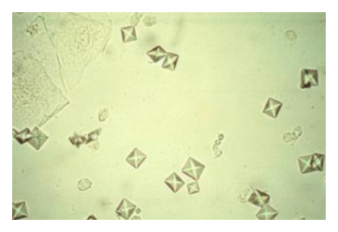
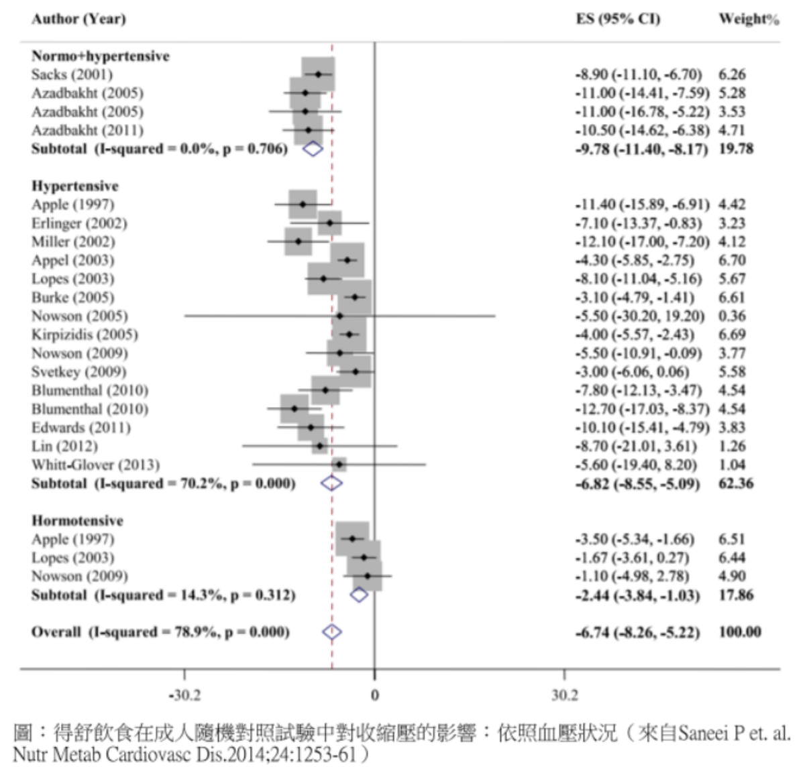
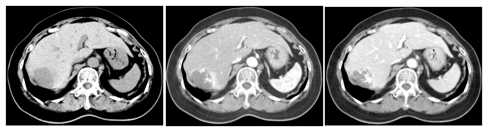
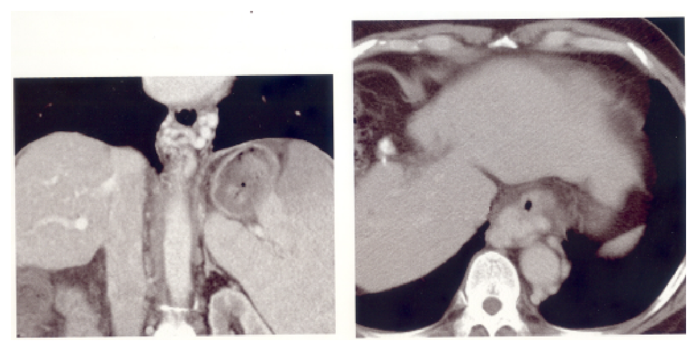

開卷有益 ／
醫師 ／ 醫學（三）（包括內科、家庭醫學科等科目及其相關臨床實例與醫學倫理） ／ 111 年第 1 次111 年第 1 次醫師醫學（三）（包括內科、家庭醫學科等科目及其相關臨床實例與醫學倫理）試題與答案
這一頁是民國 111 年第 1 次醫師醫學（三）（包括內科、家庭醫學科等科目及其相關臨床實例與醫學倫理）的整份歷屆試題，共 80 題，題目與標準答案出自考選部「國家考試試題及測驗式試題答案」開放資料，其中 80 題附有詳解。以下逐題列出題幹、選項與答案；要計時作答或記錄成績，請用線上練習。
考選部原始場次代碼：111020
線上作答這一科 →
全部 80 題
第 1 題
關於造成昏厥（syncope）的原因，下列敘述何者最不適當？
（A） 血管迷走神經性昏厥（vasovagal syncope）是最常見的原因（B） 心因性（cardiac）昏厥的原因包括心律不整（arrhythmias）及結構性心臟病（structural heart disease）（C） 姿勢性低血壓（orthostatic hypotension）也可能造成昏厥。在站立後第3分鐘時收縮壓下降15毫米汞柱或是舒張壓下降5毫米汞柱，符合姿勢性低血壓的定義（D） 懷疑是血管迷走神經性昏厥（vasovagal syncope）時可建議病人做傾斜床測試（tilt table test）答案：（C）
詳解與考點 正解：本題問最不適當的昏厥原因敘述。姿勢性低血壓（orthostatic hypotension）的常用定義為站立後 3 分鐘內收縮壓下降至少 20 mmHg 或舒張壓下降至少 10 mmHg；（C）寫成 15 mmHg 與 5 mmHg，門檻過低，故錯。診斷定義與量測情境需依現行標準判讀
A：血管迷走神經性昏厥（vasovagal syncope）是常見昏厥原因，常與疼痛、情緒刺激或久站等誘因相關，敘述適當。
B：心因性昏厥可由心律不整或結構性心臟病造成，因可能突然降低心輸出量，為重要且高風險的鑑別。
D：傾斜床測試（tilt table test）可在適當個案中協助評估疑似反射性、尤其血管迷走神經性昏厥，敘述合理。
本題考點：姿勢性低血壓（orthostatic hypotension）以站立後血壓下降的標準化門檻定義；昏厥（syncope）常見類型包括反射性、姿勢性與心因性；傾斜床測試（tilt table test）可輔助反射性昏厥評估。
第 2 題
關於骨鬆性骨折（osteoporotic fracture）的敘述，下列何者最不適當？
（A） 影像上發現脊椎骨壓迫性骨折，大部分是沒有症狀的（B） 在第一次脊椎骨壓迫性骨折一年內，再度發生其他節脊椎骨骨折的風險達20%（C） 抗骨質再吸收劑（anti-resorptive drugs）之使用目的在於急性疼痛的緩解，但無法預防脊椎骨骨折的再發（D） 若出現發燒、體重減輕或發生在胸椎第四節以上的骨折，要懷疑不是單純由老化所引發的骨折答案：（C）
詳解與考點 正解：抗骨質再吸收劑（anti-resorptive drugs）可降低骨吸收、增加或維持骨密度，重要目的是降低後續脊椎與非脊椎骨折風險，並非只為急性疼痛緩解且無法預防再發。因此最不適當的是 C。
A：脊椎壓迫性骨折可在影像檢查偶然發現，許多個案沒有明顯急性疼痛或症狀，敘述合理。
B：一旦發生脊椎壓迫性骨折，短期內再發其他椎體骨折的風險上升；此選項強調骨折瀑布效應，概念正確。
D：發燒、體重減輕或上胸椎不尋常骨折位置應考慮感染、腫瘤等次發性原因，不能逕視為單純老化性骨鬆，敘述適當。
本題考點：骨鬆性骨折（osteoporotic fracture）發生後會提高再骨折風險；抗骨質再吸收劑（anti-resorptive drugs）用於降低脆弱性骨折；紅旗徵象（red flags）如發燒、體重減輕須排除腫瘤或感染。
第 3 題
70歲男性病人，過去病史有高血壓及B型肝炎，最近3個月因活動時呼吸氣促而逐漸臥床，身體診察時發現病人端坐時比平躺時更覺得胸悶吸不到氣，下列身體診察何者對確定診斷最沒有幫助？
（A） Castell's sign（B） abdominal shifting dullness（C） diastolic rumbling heart murmur（D） right ventricle heave答案：（D）
詳解與考點 正解：題幹為端坐時較平躺時更喘，屬直立性呼吸困難（platypnea），合併 B 型肝炎背景時須考慮慢性肝病相關的肝肺症候群（hepatopulmonary syndrome）等鑑別。脾腫大與腹水可支持門脈高壓或肝病背景；右心室抬舉感（right ventricular heave）主要提示右心室壓力負荷，對確定此一診斷最沒有幫助，故選 D。
A：Castell's sign 用來偵測脾腫大；脾腫大可支持慢性肝病或門脈高壓的背景，對此鑑別有幫助。
B：腹部移動性濁音（shifting dullness）支持腹水；腹水可見於肝硬化與門脈高壓，可協助判斷是否有慢性肝病。
C：舒張期隆隆樣心雜音是二尖瓣狹窄（mitral stenosis）的線索，可用以評估心臟性呼吸困難等其他鑑別診斷，故非最沒有幫助者。
本題考點：直立性呼吸困難（platypnea）——直立時加重的呼吸困難，應與端坐呼吸（orthopnea）區分；肝肺症候群（hepatopulmonary syndrome）——慢性肝病可合併姿勢相關的低氧血症。
第 4 題
某位70歲女性因為喝有機磷（organophosphate）農藥自殺而被送來醫院急救。當農藥毒性發作時，最不可能導致下列何種徵象？
（A） 肌肉無力（B） 口水、淚液減少（C） 癲癇發作（seizure）（D） 腹瀉、大便失禁答案：（B）
詳解與考點 正解：有機磷中毒；其抑制乙醯膽鹼酯酶（acetylcholinesterase），使乙醯膽鹼在毒蕈鹼、菸鹼性與中樞受體累積。毒蕈鹼性過度刺激會造成分泌物增加，而不是口水與淚液減少，因此最不可能的是 B。
A：菸鹼性受體過度刺激可先出現肌束顫動，之後因神經肌肉接合處功能失調而肌肉無力，嚴重時可呼吸肌麻痺；因此肌肉無力是可能表現。
C：有機磷可造成中樞神經系統的膽鹼性毒性，包括焦躁、意識改變與癲癇發作，故癲癇發作並非不可能。
D：腸胃道平滑肌與腺體受到毒蕈鹼性刺激，會使腸蠕動及分泌增加，故可有腹瀉與大便失禁。
本題考點：有機磷中毒（organophosphate poisoning）因乙醯膽鹼酯酶抑制導致膽鹼性症候群（cholinergic toxidrome）；毒蕈鹼性作用造成流涎、流淚、腹瀉與支氣管分泌增加；菸鹼性作用可造成肌束顫動與無力。
第 5 題
承上題，針對上述病人之治療，下列何種方式最不適當？
（A） 服用活性碳（B） 注射atropine（C） 注射physostigmine（D） 注射pralidoxime（2-PAM）答案：（C）
詳解與考點 正解：承上題為有機磷中毒，治療目標是阻止吸收、拮抗毒蕈鹼性過度刺激，並在適當時機恢復被抑制的乙醯膽鹼酯酶活性。physostigmine 本身是乙醯膽鹼酯酶抑制劑，會進一步增加乙醯膽鹼，可能惡化膽鹼性症候群，故最不適當的是 C。
A：活性碳可在適用且氣道受到保護的情況下減少腸胃道吸收，屬去污處置的一環；它不能取代復甦與解毒治療，但不是本題最不適當的選項。
B：atropine 為抗毒蕈鹼藥，可治療支氣管分泌過多、支氣管痙攣、心搏過緩等危及生命的毒蕈鹼性表現，是重要治療。
D：pralidoxime（2-PAM）可在酵素老化前重新活化部分遭有機磷磷酸化的乙醯膽鹼酯酶，特別有助於菸鹼性症狀與肌無力；因此適合與 atropine 搭配考慮。
本題考點：有機磷中毒治療（treatment of organophosphate poisoning）包括去污、atropine 與 oxime 類復活劑；physostigmine 為乙醯膽鹼酯酶抑制劑（acetylcholinesterase inhibitor），會加重膽鹼性毒性；氣道與呼吸支持是急救優先事項。
第 6 題
下列有關主動脈瘤之敘述，何者錯誤？
（A） 造成主動脈瘤之可能病因為：退化、Marfan氏症候群等遺傳性症候群、慢性主動脈剝離、感染及非感染性動脈炎、創傷等（B） 胸主動脈瘤破裂的機會與其大小有關，直徑在4 cm以下者，風險約為每年2～3%，但若直徑大於6 cm，則風險升高至每年7%（C） 直徑4 cm以上的腹主動脈瘤，大多因動脈硬化所致，位於腎動脈以上，若瘤體內有管壁血栓，則可能因此造成下肢周邊血管栓塞（D） 無症狀腹主動脈瘤若直徑5.5 cm以上，應考慮進行主動脈瘤修補術，以血管內（endovascular）介入方式之短期死亡率較傳統外科手術為低，而長期死亡率相似答案：（C）
詳解與考點 正解：腹主動脈瘤（abdominal aortic aneurysm, AAA）的典型解剖位置。多數動脈粥樣硬化相關 AAA 位於腎動脈以下（infrarenal），不是腎動脈以上；選項 C 把主要位置說反，且以單一敘述概括所有直徑超過 4 cm 的 AAA，故為錯誤選項。壁附血栓確可形成栓子造成下肢缺血，但不能使前述錯誤位置變正確。
A：退化、遺傳性結締組織疾病、慢性剝離、感染或非感染性血管炎與創傷，皆可造成不同部位的主動脈瘤，敘述正確，故不是答案。
B：胸主動脈瘤破裂風險會隨瘤體直徑增加而升高，這是臨床追蹤與介入評估的核心原則；選項所要表達的大小與風險正相關概念正確。
D：無症狀 AAA 達一定大小時須評估修補；血管內修補術（endovascular aneurysm repair, EVAR）與開放手術的早期與長期結果差異，是治療選擇時的合理討論，並非錯誤敘述。
本題考點：腹主動脈瘤（abdominal aortic aneurysm）多位於腎動脈以下；主動脈瘤破裂風險與直徑及擴張速度相關；血管內主動脈瘤修補術（EVAR）是 AAA 的治療選項之一。
第 7 題
當病人因心功能失常或嚴重心肌缺血而出現血行動力不穩、甚或心因性休克時，除強心藥物外，可能需要機械性循環支持，下列相關敘述，何者錯誤？
（A） 主動脈氣球泵浦（IABP）之球囊置放於降主動脈，由氦氣充填，於心舒張早期充氣、舒張中後期消氣，因此可降低主動脈早期舒張期血壓以增加冠狀動脈血流，且降低主動脈收縮期血壓以降低左心室後負荷（B） Impella導管可經由股動脈逆行置入左心室，其先端部位有一小型軸向泵浦，可將左心室血液泵至主動脈，以增加心輸出量並降低左心室壓力（C） TandemHeart系統可經由左心房導管將血液抽出、由離心泵浦推送至股動脈，提供每分鐘達5公升之血流量（D） 體外膜氧合系統（ECMO）可用於急性心衰竭合併心因性休克及嚴重肺損傷合併呼吸衰竭答案：（A）
詳解與考點 正解：主動脈氣球幫浦（intra-aortic balloon pump, IABP）的反搏時相。球囊應在舒張早期充氣，以提高主動脈舒張壓、增加冠狀動脈灌流；並在收縮前消氣，以降低左心室後負荷。選項 A 卻稱舒張期充氣會降低早期舒張壓，與 IABP 的主要機制相反，故錯誤的是 A。
B：Impella 可逆行跨越主動脈瓣置入左心室，以軸向泵將左心室血液送往主動脈，增加前向血流並卸載左心室，敘述正確。
C：TandemHeart 由左心房抽血，經體外離心泵送回動脈系統，能提供較高流量的機械循環支持，敘述符合其運作原理。
D：體外膜氧合（extracorporeal membrane oxygenation, ECMO）可依型態提供循環支持或呼吸支持，故可用於心因性休克及嚴重呼吸衰竭。
本題考點：主動脈氣球幫浦（IABP）於舒張期充氣以增加冠狀動脈灌流、收縮前消氣以減少後負荷；Impella 是左心室輔助裝置（left ventricular assist device）；ECMO 可提供心肺支持。
第 8 題
下列狀況何者不是壓力催迫性檢查（stress test）的絕對禁忌症？
（A） 不穩定心絞痛（B） 嚴重心內膜炎（C） 無症狀之主動脈狹窄（D） 嚴重心律不整，且曾併發血行動力學不穩定答案：（C）
詳解與考點 正解：「不是絕對禁忌症」。壓力催迫性檢查會提高心肌耗氧與血行動力負荷；不穩定心絞痛、活動性心內膜炎及造成血行動力不穩定的嚴重心律不整，皆可能在檢查中惡化。無症狀主動脈狹窄則需依嚴重度與臨床狀況個別評估，並非一律的絕對禁忌症，故選 C。
A：不穩定心絞痛代表可能進行中的急性冠心症，運動或藥物催迫可能加劇缺血，屬不宜進行檢查的情況。
B：嚴重心內膜炎（endocarditis）屬活動性感染與心臟結構可能受損的狀態，應先處理感染及其併發症，不宜以壓力檢查增加風險。
D：曾造成血行動力不穩定的嚴重心律不整，可能因催迫再度誘發危險節律，故屬絕對禁忌的考量。
本題考點：壓力測試（stress test）禁忌症著重急性心肌缺血、未控制的心律不整與活動性嚴重疾病；主動脈狹窄（aortic stenosis）的風險取決於症狀與嚴重度；檢查前須先評估血行動力安全性。
第 9 題
使用下列何種抗心律不整藥物可能會造成心電圖上出現ST節段升高（ST segment elevations）情形？
（A） class 1C antiarrhythmic drugs（B） class II antiarrhythmic drugs（C） class III antiarrhythmic drugs（D） class IV antiarrhythmic drugs答案：（A）
詳解與考點 正解：抗心律不整藥造成 ST 節段上升。class 1C 藥物強烈阻斷快速鈉離子通道，顯著減慢心室內傳導；在 Brugada syndrome 或潛在 Brugada 型態者，可使右胸前導程出現或加重 ST 節段上升，故選 A。
B：class II 為 beta blocker，主要降低交感神經作用、心率與房室結傳導，典型心電圖影響是心率減慢或 PR 間期延長，並非以 ST 節段上升為特徵。
C：class III 主要延長再極化與不反應期，可延長 QT 間期並增加 torsades de pointes 風險；它看似也會改變心電圖，但主要不是造成 Brugada 型 ST 上升。
D：class IV 為非二氫吡啶類鈣離子通道阻斷劑，主要作用於房室結而延長 PR 間期，不會是 ST 節段上升的典型藥物原因。
本題考點：Vaughan Williams class 1C antiarrhythmic drugs 強力阻斷鈉離子通道；Brugada syndrome 可因鈉通道阻斷而顯現 ST segment elevation；class III 藥物的典型風險是 QT prolongation。
第 10 題
一位75歲男性因心悸至門診，十二導程心電圖顯示心房顫動。下列對心房顫動之敘述何者錯誤？
（A） 心房顫動為女性多於男性（B） 心房顫動風險因子（risk factor）包括甲狀腺亢進、高血壓、糖尿病及肥胖等（C） 心房顫動可能會造成心衰竭（D） 心房顫動之缺血性中風風險評估可用 CHA2DS2-VASc score答案：（A）
詳解與考點 正解：心房顫動（atrial fibrillation, AF）的流行病學。AF 在男性較常見，且風險隨年齡增加；選項 A 說女性多於男性，與一般流行病學趨勢不符，故為錯誤敘述。
B：甲狀腺亢進、高血壓、糖尿病與肥胖皆與 AF 發生相關，分別可藉心房電生理改變、壓力負荷或心房結構重塑增加風險，敘述正確。
C：持續快速心室反應或失去心房收縮貢獻，可誘發或加重心衰竭；AF 與心衰竭也常互為因果，故敘述正確。
D：CHA2DS2-VASc score 用於估計非瓣膜性 AF 病人的缺血性中風風險並協助抗凝決策，屬正確敘述。
本題考點：心房顫動（atrial fibrillation）在男性較常見且隨年齡增加；危險因子包括高血壓、甲狀腺亢進、糖尿病與肥胖；CHA2DS2-VASc score 用於缺血性中風風險評估。
第 11 題
關於慢性靜脈疾病，包括靜脈曲張（varicose vein）的描述，下列何者正確？
（A） 原發性靜脈曲張的病人絕大多數是因為靜脈高壓所造成，很少有家族史（B） 女性使用荷爾蒙替代療法不會增加靜脈曲張的風險（C） 原發性的靜脈曲張常發生在深層靜脈（D） 慢性靜脈疾病的主要診斷工具是venous duplex ultrasonography答案：（D）
詳解與考點 正解：慢性靜脈疾病的主要診斷工具。靜脈雙工超音波（venous duplex ultrasonography）可同時觀察靜脈解剖、血流方向、瓣膜逆流與阻塞，是評估靜脈曲張及慢性靜脈功能不全的首選影像檢查，故選 D。
A：原發性靜脈曲張常有遺傳與家族聚集傾向，不能說很少有家族史；靜脈高壓是病理生理後果或相關機轉，但此項的家族史描述錯誤。
B：女性荷爾蒙暴露可影響靜脈壁及靜脈瓣功能，使用荷爾蒙替代療法並非不增加風險；「不會」是過度絕對的錯誤敘述。
C：原發性靜脈曲張主要發生在表淺靜脈系統及其瓣膜，深層靜脈病變較常見於血栓後或其他次發性靜脈疾病，故不符。
本題考點：慢性靜脈疾病（chronic venous disease）常由靜脈瓣逆流造成；靜脈曲張（varicose vein）主要涉及表淺靜脈；靜脈雙工超音波（venous duplex ultrasonography）可評估逆流與阻塞。
第 12 題
下列何種乙型交感神經阻斷劑（beta blocker）無法改善左心室射出分率降低的心衰竭（heart failure withreduced ejection fraction）之預後？
（A） carvedilol（B） bisoprolol（C） propranolol（D） metoprolol succinate答案：（C）
詳解與考點 正解：能改善低射出分率心衰竭（heart failure with reduced ejection fraction, HFrEF）預後的特定 beta blocker。carvedilol、bisoprolol 與 metoprolol succinate 具有改善死亡率與住院風險的證據；propranolol 不屬於這組具預後效益的 HFrEF beta blocker，故選 C。
A：carvedilol 具 beta 阻斷及 alpha1 阻斷作用，是 HFrEF 中可改善預後的 beta blocker 之一。
B：bisoprolol 為 beta1 選擇性阻斷劑，為 HFrEF 證據支持的藥物之一，故不是答案。
D：metoprolol succinate 是緩釋劑型的 metoprolol，與一般短效劑型不可混為一談；此劑型具 HFrEF 預後效益，故非答案。
本題考點：低射出分率心衰竭（HFrEF）的實證 beta blocker 包括 carvedilol、bisoprolol、metoprolol succinate；beta blocker 須區分特定藥物與劑型；propranolol 不作為改善 HFrEF 預後的標準藥物。
第 13 題
有關心臟衰竭（heart failure, HF）血清標記的描述，何者錯誤？
（A） 當低收縮分率心臟衰竭患者使用angiotensin receptor neprilysin inhibitor（ARNI）後，B-type natriureticpeptide（BNP）的濃度會降低（B） 當年齡增加時，N-terminal pro-BNP（NT-proBNP）血清濃度會增加（C） 當腎功能變差時，NT-proBNP血清濃度會增加（D） 在門診呼吸困難患者中，BNP或NT-proBNP的測量可用於支持有關HF診斷的臨床決策，尤其是在臨床不確定性情況下答案：（A）
詳解與考點 正解：ARNI 對 natriuretic peptide 的不同影響。angiotensin receptor neprilysin inhibitor（ARNI）抑制 neprilysin，會減少 BNP 的分解，因此 BNP 不一定降低，甚至可上升；相對地，NT-proBNP 不受 neprilysin 分解，常用於追蹤治療反應。選項 A 稱 BNP 濃度會降低，故為錯誤敘述。
B：NT-proBNP 濃度會隨年齡增加而偏高，判讀數值時需結合年齡及臨床情境，敘述正確。
C：腎功能變差會降低 NT-proBNP 的清除並常伴隨容量負荷變化，因此血清濃度可增加，敘述正確。
D：在門診呼吸困難且臨床診斷不確定時，BNP 或 NT-proBNP 可作為支持或降低心衰竭可能性的輔助資訊，不能脫離臨床整體判讀，但選項敘述正確。
本題考點：ARNI（angiotensin receptor neprilysin inhibitor）會影響 BNP 代謝；NT-proBNP 不受 neprilysin 分解，較適合用於 ARNI 治療中的追蹤；natriuretic peptides 可輔助心衰竭（heart failure）診斷。
第 14 題
一位75歲的女性病人最近感覺到漸進性運動性氣促，下列何項檢查對呼吸困難的鑑別診斷幫助最小？
（A） 胸部X光（B） 身體診察（physical examination）（C） 24小時心電圖（Holter monitoring）（D） 心臟超音波答案：（C）
詳解與考點 正解：漸進性運動性呼吸困難的初步鑑別。胸部 X 光、完整身體診察與心臟超音波可分別發現肺部病灶、貧血或心肺體徵、心臟結構與收縮／瓣膜異常；24 小時心電圖（Holter monitoring）主要用來捕捉間歇性心律不整，對沒有心悸、暈厥或疑似陣發性心律不整線索的漸進性氣促，幫助最小，故選 C。
A：胸部 X 光可協助辨識肺水腫、胸水、肺炎、腫瘤或慢性肺病線索，是呼吸困難常用的初步檢查。
B：身體診察可發現喘鳴、濕囉音、心雜音、頸靜脈怒張、下肢水腫等方向性線索，對鑑別診斷不可或缺。
D：心臟超音波可評估左心室功能、瓣膜疾病與肺高壓相關線索；它看似較專門，但對高齡者運動性氣促的心因性原因有重要價值。
本題考點：呼吸困難（dyspnea）鑑別須同時評估心臟、肺部與全身原因；胸部 X 光與心臟超音波可找結構性病因；Holter monitoring 主要用於懷疑間歇性心律不整時。
第 15 題
下列何者不是慢性B型肝炎患者，是否需要接受抗B型肝炎病毒藥物治療根據的因素？
（A） B型肝炎病毒核醣核酸（RNA）濃度（B） 肝臟損傷（纖維化）嚴重度（C） 血中丙胺酸轉胺酶（alanine aminotransferase, ALT）高低（D） 病人是否因其他疾病須接受抗癌化學藥物治療答案：（A）
詳解與考點 正解：慢性 B 型肝炎是否治療的常規依據。治療決策主要整合病毒複製程度、ALT、肝纖維化或肝硬化程度，以及免疫抑制或化學治療下再活化風險；臨床常用的是 B 型肝炎病毒 DNA，而非 B 型肝炎病毒 RNA 濃度，因此 A 不是常規治療依據。
B：肝纖維化嚴重度反映既有肝臟損傷與進展風險，是決定是否治療的重要依據。
C：ALT 高低可反映肝細胞發炎活動，需與病毒量及纖維化程度一起判讀，故是治療評估因素。
D：接受抗癌化學治療可能造成 B 型肝炎再活化，是否需要預防性抗病毒治療必須納入評估，故不是答案。
本題考點：慢性 B 型肝炎（chronic hepatitis B）治療評估整合 HBV DNA、ALT 與肝纖維化（fibrosis）；免疫抑制或化學治療會提高 HBV reactivation 風險；HBV RNA 不是一般治療啟動的常規依據。
第 16 題
25歲女性來急診室主訴3天前開始噁心，肚臍周圍及上腹疼痛，隔天疼痛轉移到右下腹部，且疼痛加劇。這時候開始發燒、畏寒。關於此問題的診療及處置，下列敘述何者錯誤？
（A） 病史詢問需要考慮泌尿道及婦產科方面的問題：包括子宮內膜異位、子宮外孕（ectopic pregnancy），以及骨盆腔發炎都是有可能的診斷（B） 身體診察上要注意右下腹部的檢查。在McBurney's point上有壓痛的情形即為Rovsing's sign陽性，需要懷疑是急性闌尾炎（acute appendicitis）（C） 若沒有懷孕的可能，可以安排電腦斷層檢查，以協助診斷。急性闌尾炎常會看到闌尾壁變厚，周邊發炎，但不一定會看到糞石（fecalith）（D） 若闌尾破裂被腸繫膜包住形成局部膿瘍，需要給與廣效抗生素及考慮安排引流。手術切除可延後至局部發炎改善後再進行答案：（B）
詳解與考點 正解：臍周痛轉移右下腹、發燒與畏寒，典型指向急性闌尾炎（acute appendicitis）。McBurney's point 壓痛是局部腹膜刺激的壓痛點；Rovsing's sign 則是壓迫左下腹誘發右下腹痛。選項 B 把兩種理學檢查混為一談，故為錯誤敘述。
A：育齡女性右下腹痛必須納入泌尿道與婦產科鑑別，包括異位妊娠、骨盆腔發炎與子宮內膜異位等，敘述正確。
C：未懷孕者可用電腦斷層協助診斷闌尾炎，常見闌尾擴張、壁增厚與周邊脂肪發炎；糞石可出現但不是必要條件，敘述正確。
D：局限性闌尾周圍膿瘍可先以抗生素及必要時經皮引流控制感染，再依病況評估後續手術，敘述正確。
本題考點：急性闌尾炎（acute appendicitis）常由臍周痛遷移至右下腹；McBurney's point tenderness 與 Rovsing's sign 是不同身體診察徵象；育齡女性右下腹痛須先排除婦產科急症。
第 17 題
關於大腸直腸癌，下列敘述何者錯誤？
（A） 腺瘤樣息肉（adenomatous polyp）屬於癌前病變，而增生性息肉（hyperplastic polyp）則較不會有惡性的變化（B） 息肉有分扁平狀（sessile）、鋸齒狀（serrated）及突起狀（pedunculated），突起狀息肉較具侵襲性（C） familial adenomatous polyposis產生大腸癌的風險較Peutz-Jeghers syndrome的風險為高（D） Lynch's syndrome導致的大腸癌與遺傳有關，也會增加發生子宮內膜癌或是卵巢癌的風險答案：（B）
詳解與考點 正解：大腸直腸息肉的形態與惡性風險。sessile 與 pedunculated 是肉眼外形描述，serrated 則是組織形態與病理路徑概念，不能混列為同一分類軸；息肉的隆起形態本身也不能直接推論突起狀（pedunculated）較具侵襲性；扁平或凹陷病灶反而可能較難察覺且具有較高的進展風險，是否侵襲須看組織病理與病灶特徵。選項 B 以形態直接斷言突起狀較具侵襲性，故錯誤。
A：腺瘤樣息肉是重要癌前病變；一般小型增生性息肉多不具顯著惡性潛能，敘述正確。
C：familial adenomatous polyposis（FAP）若未處置，發生大腸直腸癌風險極高；相較之下 Peutz-Jeghers syndrome 雖也增加風險，選項的比較方向正確。
D：Lynch syndrome 為遺傳性錯配修復缺陷相關疾病，除大腸直腸癌外也增加子宮內膜癌與卵巢癌風險，敘述正確。
本題考點：腺瘤樣息肉（adenomatous polyp）是大腸直腸癌前病變；息肉侵襲風險須依病理與病灶特徵判斷，不能僅以 pedunculated 或 sessile 形態概括；Lynch syndrome 與錯配修復缺陷（mismatch repair deficiency）相關。
第 18 題
關於胃酸的分泌，下列何者錯誤？
（A） 主管胃酸分泌之parietal cells其細胞膜上分泌胃酸的主要幫浦為H+/K+- ATPase（B） parietal cells 因靠離子濃度差異進行胃酸分泌，因此其中粒腺體（mitochondria）之數目很少（C） parietal cells之胃酸分泌受到胃泌素受體（gastrin receptor）、乙醯膽鹼受體（acetylcholine receptor）以及組織胺受體（histamine receptor）所調控（D） parietal cell之尖端細胞膜（apical membrane）型態會因在休息狀態（resting）或受刺激狀態（stimulated）有所改變答案：（B）
詳解與考點 正解：胃壁細胞（parietal cell）進行主動胃酸分泌所需的能量。H+/K+-ATPase 以 ATP 驅動氫離子分泌，壁細胞因此富含粒線體（mitochondria），而不是粒線體很少；選項 B 與其高能量需求相反，故錯誤。
A：壁細胞尖端膜的 H+/K+-ATPase 是胃酸分泌的主要質子幫浦，敘述正確。
C：胃泌素、乙醯膽鹼與組織胺可經各自受體共同刺激壁細胞胃酸分泌，敘述正確。
D：壁細胞在休息與受刺激狀態間，分泌小管及尖端膜會重塑，使含質子幫浦的囊泡與膜融合，敘述正確。
本題考點：胃壁細胞（parietal cell）以 H+/K+-ATPase 分泌胃酸；主動運輸需要大量 ATP，因此壁細胞富含粒線體（mitochondria）；gastrin、acetylcholine 與 histamine 共同調控胃酸分泌。
第 19 題
下列關於急性膽囊炎（acute cholecystitis）的敘述何者錯誤？
（A） 必定同時伴隨膽囊結石（B） 及早進行膽囊切除對大多數患者是最佳治療方式（C） Murphy's徵象（Murphy's sign）常為陽性（D） 可能同時合併有總膽管結石答案：（A）
詳解與考點 正解：「必定」這個絕對語句。急性膽囊炎多由膽囊管結石阻塞引起，但也可發生無結石性膽囊炎（acalculous cholecystitis），常見於重症、長期禁食或重大手術後病人；因此不會必定伴隨膽囊結石，選項 A 錯誤。
B：對大多數適合手術的急性膽囊炎病人，早期膽囊切除術通常是有效的根治處置，敘述正確。
C：Murphy's sign 是檢查者壓迫右上腹膽囊區、病人深吸氣時因疼痛突然停止吸氣的徵象，急性膽囊炎常呈陽性，故正確。
D：膽結石疾病可同時存在膽囊結石與總膽管結石，急性膽囊炎病人也可能合併總膽管結石，敘述正確。
本題考點：急性膽囊炎（acute cholecystitis）多由結石阻塞造成，但可為無結石性膽囊炎（acalculous cholecystitis）；Murphy's sign 是常見理學徵象；總膽管結石（choledocholithiasis）可同時存在。
第 20 題
下列關於膽管癌（cholangiocarcinoma）之敘述何者錯誤？
（A） 依部位可分為肝內（intrahepatic）、肝門（perihilar）及遠端（distal）3類（B） 手術切除是唯一的根治性治療（C） 肝結石症（hepatolithiasis）是其危險因子（D） 原發性硬化性膽管炎（primary sclerosing cholangitis）並不會增加膽管癌之風險答案：（D）
詳解與考點 正解：膽管癌（cholangiocarcinoma）的危險因子。原發性硬化性膽管炎（primary sclerosing cholangitis, PSC）會造成慢性膽管發炎與狹窄，明顯增加膽管癌風險；選項 D 說 PSC 不會增加風險，與已知關聯相反，故錯誤。
A：膽管癌可依解剖位置分為肝內、肝門周圍與遠端膽管癌，這種分法會影響臨床表現與治療規劃，敘述正確。
B：多數可切除膽管癌以完整手術切除為主要根治方式；特定肝門型病例亦可能在嚴格條件下進入肝臟移植流程，故本選項在傳統考題脈絡下可成立。
C：肝結石症造成長期膽道刺激與感染，是膽管癌的危險因子，敘述正確。
本題考點：膽管癌（cholangiocarcinoma）依位置分為 intrahepatic、perihilar 與 distal 類型；原發性硬化性膽管炎（PSC）與肝結石症是危險因子；可切除病灶以手術切除為根治治療。
第 21 題
決定肝臟移植接受者（recipient）接受肝臟移植的優先次序（prioritization），通常是根據下列何項指標？
（A） Model for End-Stage Liver Disease（MELD）score（B） Child-Turcotte-Pugh score（C） Maddrey's discriminant function score（D） Sequential Organ Failure Assessment（SOFA）score答案：（A）
詳解與考點 正解：肝臟移植受贈者的器官分配優先次序。Model for End-Stage Liver Disease（MELD）score 以客觀檢驗值估計末期肝病短期死亡風險，分數越高通常代表等待移植期間死亡風險越高，因而是移植優先排序的主要指標，故選 A。
B：Child-Turcotte-Pugh score 可評估肝硬化嚴重度與預後，但包含腹水與肝性腦病變等較主觀項目，主要不是器官分配優先排序指標。
C：Maddrey's discriminant function 主要用於評估重症酒精性肝炎的嚴重度與是否考慮特定治療，不用於肝臟移植常規排序。
D：SOFA score 是評估多器官功能障礙與重症嚴重度的工具，並非肝臟移植候補者優先排序的主要分數。
本題考點：MELD score（Model for End-Stage Liver Disease）用於估計末期肝病死亡風險與肝臟移植排序；Child-Turcotte-Pugh score 用於肝硬化嚴重度評估；SOFA score 用於多器官功能障礙評估。
第 22 題
一位51歲男性主訴3天前黑便兩次，生命跡象正常，血液檢查：Hb 11.2 g/dL。此病人之上腸胃道內視鏡檢查，何者可以讓我們告訴病人3天內再出血之機會不大？
（A） 胃潰瘍上有黏附之血塊，但未見出血（B） 胃潰瘍底部有未出血之血管（C） 胃潰瘍合併乾淨之潰瘍底部（D） 無消化潰瘍，但在胃體部上方有一小段可見之動靜脈畸生血管（arteriovenous malformation）答案：（C）
詳解與考點 正解：上消化道出血內視鏡的低再出血風險徵象。消化性潰瘍呈乾淨的潰瘍底部（clean ulcer base）表示沒有活動性出血、可見血管或黏附血塊等高危險徵象，短期再出血風險低，因此可較有把握告知病人 3 天內再出血機會不大，故選 C。
A：潰瘍上黏附血塊可能遮蔽下方血管，仍屬再出血風險較高的內視鏡表現，不能以未見活動性出血就判定安全。
B：未出血但可見血管代表近期出血的高危險徵象，雖然當下未噴血，仍可能再出血，是很強的誘答。
D：胃部動靜脈畸形（arteriovenous malformation）可造成出血或再出血；單憑當下未描述出血，不能像乾淨潰瘍底部一樣作為低風險判定。
本題考點：消化性潰瘍出血（peptic ulcer bleeding）的內視鏡風險分層；乾淨潰瘍底部（clean ulcer base）是低再出血風險徵象；可見血管與黏附血塊代表較高再出血風險。
第 23 題
有關B型肝炎病毒感染後的血清學反應，下列何者錯誤？
（A） 最早出現的血清病毒標誌為表面抗原（HBsAg），最常在感染後的8～12週可偵測到（B） 表面抗原（HBsAg）的出現時間比血清轉氨酶（transaminase）上升及臨床症狀的出現可以早2～6週（C） isolated anti-HBc陽性，可以出現在急性B型肝炎病毒感染或是隱匿性B型肝炎感染（occult HBV infection）（D） 急性感染時，核心抗體（anti-HBc IgM）在表面抗原（HBsAg）出現的4週後才可以偵測到答案：（D）
詳解與考點 正解：急性 B 型肝炎的血清標誌出現先後。HBsAg 是最早可測得的血清病毒標誌；anti-HBc IgM 則在急性感染早期、通常與 HBsAg 出現相近的時期即可檢出，並非必須等 HBsAg 出現 4 週後才出現，故錯誤的是 D。
A：HBsAg 是急性感染最早出現的常規血清標誌，約在感染後 8～12 週可偵測到，敘述正確，故非答案。
B：HBsAg 可早於血清轉氨酶上升與臨床黃疸、倦怠等症狀出現，敘述的先後關係正確，故非答案。
C：isolated anti-HBc 是只有 anti-HBc 陽性而 HBsAg 與 anti-HBs 陰性的型態，可見於急性感染窗口期，也可能見於隱匿性 B 型肝炎感染，故敘述正確。
本題考點：B 型肝炎血清學（hepatitis B serology）——HBsAg 是早期感染標誌；核心抗體 IgM（anti-HBc IgM）支持急性或近期感染；isolated anti-HBc 的鑑別包括窗口期與隱匿性 HBV 感染。
第 24 題
53歲男性腎臟移植病人，移植腎功能惡化，1個月內serum creatinine 由1.0 mg/dL，上升至2.0 mg/dL，移植腎切片顯示內皮細胞損傷（endothelial injury）、C4d 沉積，下列何種治療最不適當？
（A） 血漿置換（plasmapheresis）（B） 免疫球蛋白注射（immunoglobulin infusion）（C） anti-IL2 接受器（anti-IL2 receptor）單株抗體注射（D） anti-CD20 單株抗體（rituximab）注射答案：（C）
詳解與考點 正解：移植腎功能迅速惡化、內皮細胞損傷與 C4d 沉積，指向抗體媒介排斥（antibody-mediated rejection）。治療重點是移除循環抗體、調節免疫反應及抑制 B 細胞；anti-IL2 receptor 單株抗體主要用於移植誘導免疫抑制、預防急性細胞性排斥，並非 C4d 陽性抗體媒介排斥的標準治療，故最不適當的是 C。
A：血漿置換可移除循環中的供者特異性抗體，是抗體媒介排斥常用處置之一，故非答案。
B：靜脈免疫球蛋白可調節體液免疫反應，常與血漿置換等治療合用，故非最不適當。
D：rituximab 針對表現 CD20 的 B 細胞，可用於抑制抗體來源的 B 細胞反應；它看似是較廣泛的免疫抑制，但其標的正符合抗體媒介排斥的病理機轉，故非答案。
本題考點：抗體媒介排斥（antibody-mediated rejection）——C4d 沉積與微血管內皮傷害支持診斷；血漿置換、靜脈免疫球蛋白與 B 細胞導向治療用於處理體液免疫；anti-IL2 receptor 治療主要對應 T 細胞路徑。
第 25 題
一名50歲男性尿路結石病人的尿液檢查發現結晶物質如附圖所示，下列何項建議最為適當？

（A） consume a low-calcium diet from now on（B） need not modulate urine pH（C） start taking tiopronin or penicillamine（D） supply high-dose vitamin C答案：（B）
詳解與考點 正解：附圖可見多個中央呈X形分隔、如信封的四面體結晶，為草酸鈣二水合物（calcium oxalate dihydrate）的典型外觀。草酸鈣結石是最常見的尿路結石，其形成不如尿酸結石或胱胺酸結石般可藉調整尿液pH明確溶解或預防，故不必特別調整尿液pH，選B。
A：限制鈣攝取看似可減少鈣結石，實則低鈣飲食會減少腸道鈣與草酸結合，使更多草酸被吸收並由尿液排出，反而可能增加草酸鈣結石風險；應維持適量飲食鈣。
C：tiopronin與penicillamine可和胱胺酸形成較易溶解的複合物，用於胱胺酸尿症（cystinuria）造成的胱胺酸結石；附圖的信封狀結晶不是胱胺酸典型的六角形結晶，故不適用。
D：高劑量vitamin C可代謝為草酸，增加尿草酸排泄，對草酸鈣結石患者反而可能提高復發風險，並非適當補充。
本題考點：草酸鈣結石（calcium oxalate stone）常見信封狀草酸鈣二水合物結晶；結石預防（stone prevention）重點包含足量飲水與適量飲食鈣；胱胺酸尿症（cystinuria）的六角形結晶才考慮tiopronin或penicillamine。
第 26 題
下列何項不是急性間質性腎炎（acute interstitial nephritis）的常見臨床表現？
（A） 尿液分析僅輕度蛋白尿（＜1.0 g/24 hours）和血尿（B） 血清肌酸酐上升合併鈉排出率（fractional excretion of sodium）＞1.0（C） 使用氫離子幫浦阻斷劑後發生腎病症候群程度的蛋白尿（nephrotic-range proteinuria）（D） 腎衰竭發展耗時數日至數週，符合原發性免疫反應動力學（kinetics）答案：（C）
詳解與考點 正解：急性間質性腎炎（acute interstitial nephritis, AIN）是腎小管間質病變，常見的是急性腎功能惡化、輕度蛋白尿、血尿或膿尿；即使由藥物引起，腎病症候群程度蛋白尿也不是典型表現。使用氫離子幫浦阻斷劑後出現 nephrotic-range proteinuria 應考慮合併其他腎絲球病變，故 C 不是常見表現。
A：AIN 可出現輕度蛋白尿與血尿，蛋白尿通常不達腎病症候群程度，故是常見尿液表現。
B：AIN 屬腎實質性急性腎損傷，鈉排出率可上升；這點看似不如臨床症狀直觀，但與腎小管功能受損相符，故非答案。
D：藥物誘發 AIN 常在暴露後數日至數週出現，符合免疫介導反應的時間軸，故敘述正確。
本題考點：急性間質性腎炎（acute interstitial nephritis）——多為藥物相關的腎小管間質免疫反應；典型為急性腎損傷與輕度尿液異常；大量蛋白尿應另思考腎絲球疾病。
第 27 題
有關多囊性腎臟病的敘述，下列何者錯誤？
（A） 自體顯性多囊性腎臟病（autosomal dominant polycystic kidney disease, ADPKD）是最常見的遺傳性腎臟疾病（B） 自體顯性多囊性腎臟病（autosomal dominant polycystic kidney disease, ADPKD）的致病基因目前已知的有兩型：第一型：PKD1 基因，位在第16對染色體短臂上（16p13.3）；第二型：PKD2 基因，位在第4對染色體長臂上（4q21-q23）（C） 多囊性腎臟病的患者，約3.2%~10%會發生腦部動脈瘤，男性有較高的盛行率，特別是年紀小於30歲者（D） 多囊性腎臟病的患者與一般末期腎病不同的是，患者發生嚴重貧血的機率較小，當惡化至尿毒症時，患者一樣可接受透析治療或腎臟移植答案：（C）
詳解與考點 正解：多囊性腎臟病合併顱內動脈瘤的風險確實高於一般人，但盛行率與年齡、家族史等因素相關，不能把「男性、年紀小於 30 歲」說成特別高盛行率的典型族群，故 C 的流行病學敘述錯誤。
A：自體顯性多囊性腎臟病（autosomal dominant polycystic kidney disease, ADPKD）是最常見的遺傳性腎臟疾病之一，敘述正確。
B：ADPKD 主要致病基因為 PKD1 與 PKD2，題述染色體位置正確，故非答案。
D：ADPKD 病人因腎臟仍可產生相對較多紅血球生成素，嚴重貧血相較其他末期腎病較少；進展至尿毒症後仍可接受透析或腎臟移植，故正確。
本題考點：自體顯性多囊性腎臟病（ADPKD）——PKD1、PKD2 是主要基因；腎外表現包括顱內動脈瘤；末期腎病可採透析或腎臟移植。
第 28 題
下列原發性腎病變引起的腎病症候群（nephrotic syndrome），那一種最容易發生血栓併發症（如：renal veinthrombosis、pulmonary embolism和deep-vein thrombosis）？
（A） type I membranoproliferative glomerulonephritis（MPGN）（B） focal segmental glomerulosclerosis（FSGS）（C） membranous nephropathy（MN）（D） minimal change disease（MCD）答案：（C）
詳解與考點 正解：腎病症候群造成低白蛋白血症、尿中流失抗凝血蛋白與凝血因子失衡，因而提高靜脈血栓風險；在原發性腎病變中，膜性腎病變（membranous nephropathy, MN）與腎靜脈血栓及肺栓塞的關聯最強，故選 C。
A：第一型膜增生性腎絲球腎炎（type I MPGN）可造成腎病症候群，但血栓傾向不如膜性腎病變典型，故非答案。
B：局部節段性腎絲球硬化症（FSGS）也會有大量蛋白尿與血栓風險；它看似合理的原因正在於腎病症候群本身，但比較各原發病變時，MN 的風險更突出。
D：微小病變（minimal change disease, MCD）可有嚴重蛋白尿，但相較 MN 並非最容易發生血栓併發症者。
本題考點：腎病症候群的高凝狀態（hypercoagulability in nephrotic syndrome）——尿中流失抗凝血蛋白與肝臟增加凝血蛋白生成會增加靜脈血栓風險；膜性腎病變（membranous nephropathy）是經典高風險病因。
第 29 題
在皮質集尿管（cortical collecting duct）有三種上皮細胞，下列敘述何者正確？
（A） 主細胞（principal cells）是負責鉀離子的再吸收細胞（B） 作用在主細胞（principal cells）包括：醛固酮，K+-sparing利尿劑及醛固酮拮抗劑（C） A型間細胞（type A intercalated cells）控制酸的再吸收與重碳酸根分泌（D） B型間細胞（type B intercalated cells）控制酸的分泌與重碳酸根再吸收答案：（B）
詳解與考點 正解：皮質集尿管的主細胞（principal cells）是醛固酮與保鉀利尿劑的重要作用部位。醛固酮促進鈉再吸收與鉀分泌；保鉀利尿劑及醛固酮拮抗劑則在此路徑減弱鈉再吸收或鉀分泌，故 B 正確。
A：主細胞主要促進鉀離子分泌，而非再吸收，故錯。
C：A 型間細胞（type A intercalated cells）分泌氫離子並再吸收重碳酸根，以處理酸中毒；選項把酸與重碳酸根方向顛倒，故錯。
D：B 型間細胞（type B intercalated cells）分泌重碳酸根並再吸收氫離子，以處理鹼中毒；選項描述的是相反方向，故錯。
本題考點：皮質集尿管（cortical collecting duct）——主細胞調控鈉、鉀與水；A 型間細胞分泌 H+；B 型間細胞分泌 HCO3−；醛固酮與保鉀利尿劑主要影響主細胞。
第 30 題
關於急性腎損傷處置的敘述，下列何者錯誤？
（A） 對於非出血性休克病人的靜脈輸液，建議使用等張晶體溶液（isotonic crystalloid solution）（B） 建議重症病人以低蛋白飲食來延緩透析（C） 在體液容積足夠的情況下，furosemide stress test能夠作為急性腎損傷惡化的預測工具（D） 不建議使用低劑量多巴胺（dopamine）來預防急性腎損傷答案：（B）
詳解與考點 正解：急性腎損傷（acute kidney injury, AKI）的營養處置須避免不必要的蛋白質限制；重症病人若以低蛋白飲食企圖延緩透析，可能加重負氮平衡與營養不良，且不能作為延緩透析的建議，故錯誤的是 B。
A：非出血性休克需要補充血管內容積時，等張晶體溶液是常用的初始靜脈輸液選擇，故正確。
C：在體液容積已足夠時，furosemide stress test 可藉尿量反應協助預測 AKI 惡化風險；它看似只是治療性利尿，但在此特定前提下也可作為預後評估工具，故非答案。
D：低劑量 dopamine 無法有效預防 AKI，且可能造成不良反應，因此不建議使用，敘述正確。
本題考點：急性腎損傷處置（acute kidney injury management）——以適當輸液矯正低灌流；避免以低劑量 dopamine 預防 AKI；腎臟替代治療時機不應以刻意限制蛋白質來延後。
第 31 題
關於痛風（gout）疾病的敘述，下列何者最適當？
（A） 痛風常發生在中年男性，而女性在停經（menopause）之後痛風的發生率會降低（B） 急性痛風關節炎發作時，血中的uric acid濃度可以是在正常值的範圍內（C） X光檢查常會看到明顯的關節破壞，但關節的ultrasound檢查較無法看到尿酸結晶的關節變化（D） 針對痛風合併腎臟功能不全的病人，不應使用glucocorticoid的藥物來治療急性痛風關節炎答案：（B）
詳解與考點 正解：急性痛風關節炎發作時，血中尿酸可能因發炎期間的尿酸移動與排泄改變而落在正常範圍；因此正常尿酸值不能排除急性痛風，故最適當的是 B。
A：女性停經後因雌激素的保護作用減少，痛風發生率反而上升，不是降低，故錯。
C：超音波可偵測尿酸鹽結晶沉積，例如雙軌徵（double contour sign）；相較之下，早期 X 光未必已有明顯關節破壞，故此敘述把影像優勢顛倒。
D：腎功能不全病人治療急性痛風時，glucocorticoid 常是可考慮的抗發炎選項；真正需特別調整或避免的是某些 NSAID 與秋水仙素使用方式，故錯。
本題考點：急性痛風（acute gouty arthritis）——急性期血清尿酸可正常；關節超音波可顯示尿酸鹽沉積；腎功能不全時須依病人狀況選擇抗發炎治療。
第 32 題
30歲女性，類風濕性關節炎長期吃藥控制，最近要準備懷孕，下列何種用藥建議最適當？
（A） methotrexate與leflunomide都可以在懷孕前使用，驗到受孕再停止即可（B） 所有生物製劑都可以在懷孕中全程使用（C） hydroxychloroquine與sulfasalazine都可以在懷孕中全程使用（D） 低劑量類固醇在懷孕前可以使用，一旦驗到受孕就不能再使用類固醇答案：（C）
詳解與考點 正解：準備懷孕的類風濕性關節炎病人，需選擇可維持疾病控制且妊娠相容的疾病調節抗風濕藥。hydroxychloroquine 與 sulfasalazine 均可在妊娠期間使用，故 C 最適當。
A：methotrexate 與 leflunomide 都具有胚胎風險，不能等驗到受孕才停藥，應在受孕前完成停藥與必要處置，故錯。
B：生物製劑的胎盤轉運與妊娠期使用考量依藥物種類及孕期不同，不能概括為所有製劑皆可全程使用，故錯。
D：低劑量類固醇在需要時可於妊娠期間審慎使用，並非一驗到受孕就絕對不能使用；此選項看似在避免胎兒暴露，但過度停藥也可能使母體疾病失控。
本題考點：妊娠與類風濕性關節炎（pregnancy in rheumatoid arthritis）——hydroxychloroquine、sulfasalazine 屬常用妊娠相容藥物；methotrexate、leflunomide 應於受孕前避免；生物製劑與類固醇須個別評估。
第 33 題
有關急性風濕熱（acute rheumatic fever）的敘述，下列何者正確？
（A） 大多數都是由感染group B Streptococci所引起（B） 從感染到出現關節炎，平均大概會間隔3個月左右（C） erythema marginatum屬於較罕見臨床表徵（約小於5%）（D） 大概有10 %病人會進展到風濕性心臟病（rheumatic heart disease）答案：（C）
詳解與考點 正解：急性風濕熱的皮膚表現中，環狀紅斑（erythema marginatum）確實少見，是較罕見的主要 Jones 表徵，故 C 正確。
A：急性風濕熱是 A 群 β 溶血性鏈球菌（group A Streptococcus）咽喉感染後的免疫介導併發症，不是 group B Streptococci 所致。
B：關節炎通常在鏈球菌感染後數週出現，而非平均間隔 3 個月，故錯。
D：急性風濕熱可造成風濕性心臟病，心臟炎是重要併發症；選項將進展比例說得過低，不能作為正確敘述。
本題考點：急性風濕熱（acute rheumatic fever）——發生於 A 群鏈球菌咽炎後；Jones criteria 的主要表徵包括心臟炎、游走性多關節炎、舞蹈症、環狀紅斑與皮下結節；環狀紅斑較罕見。
第 34 題
42歲周女士因為類風濕性關節炎，自1年前開始接受腫瘤壞死因子拮抗劑（tumor necrosis factor-alphainhibitor）adalimumab每2週40 mg注射治療。大概3週前，周女士發現臉上、手臂伸側、上背部及頸部後側開始出現紅疹，驗血發現抗核抗體（antinuclear antibodies, ANA）以及抗雙股DNA抗體（anti-dsDNAantibodies）由用藥前的陰性轉為陽性，下列處置何者最適當？
（A） 停掉adalimumab，改用etanercept（B） 加上prednisolone 1 mg/kg/day，繼續使用adalimumab（C） 停掉adalimumab，改用rituximab（D） 停掉adalimumab，改用infliximab答案：（C）
詳解與考點 正解：使用 adalimumab 後出現光敏感部位樣的皮疹，且 ANA、anti-dsDNA 由陰轉陽，最符合 TNF 抑制劑誘發狼瘡樣症候群（TNF inhibitor-induced lupus-like syndrome）。處置核心是停用致病的 TNF 抑制劑，並改用不同作用機轉的治療；rituximab 為 B 細胞導向藥物，故選 C。
A、D：etanercept 與 infliximab 同樣都是 TNF 抑制劑，將 adalimumab 換成同類藥物無法避開同一類藥物誘發自體免疫的問題，故皆不適當。
B：繼續使用 adalimumab 會持續暴露於疑似致病藥物；prednisolone 可在症狀控制上有角色，但不能取代停用誘發藥物，故錯。
本題考點：TNF 抑制劑誘發狼瘡樣症候群（TNF inhibitor-induced lupus-like syndrome）——出現皮疹與 ANA、anti-dsDNA 新陽性時，優先停用 TNF 抑制劑；後續宜改用不同作用機轉的疾病調節治療。
第 35 題
目前認為脊椎關節炎（spondyloarthritis）最起始之病灶為何處？
（A） 軟骨（cartilage）（B） 肌腱附著點（enthesis）（C） 硬骨（bone）（D） 滑膜（synovium）答案：（B）
詳解與考點 正解：脊椎關節炎（spondyloarthritis）的典型起始病灶是肌腱、韌帶或關節囊附著於骨頭處的附著點（enthesis），其發炎稱為 enthesitis，故選 B。
A：軟骨（cartilage）可在疾病後續受損，但不是脊椎關節炎最具代表性的起始病灶。
C：硬骨（bone）可出現骨炎、侵蝕或新骨形成，但這些是與附著點發炎相連的變化，並非首要病灶。
D：滑膜（synovium）發炎是類風濕性關節炎等疾病的重要特徵；它看似同樣能造成關節炎，但脊椎關節炎的病理定位以附著點為核心，故錯。
本題考點：脊椎關節炎（spondyloarthritis）——附著點炎（enthesitis）是核心病理；與以滑膜炎（synovitis）為主的類風濕性關節炎有所區別。
第 36 題
腫瘤細胞常藉著分泌生物激素與其他免疫相關分子來抑制免疫反應，減少免疫相關分子來毒殺腫瘤細胞，下列有關免疫反應相對應機轉之敘述何者錯誤？
（A） 腫瘤細胞分泌interferon-γ等抑制免疫之細胞激素，可以抑制免疫反應（B） 腫瘤細胞class I major histocompatibility complex（MHC）喪失，影響免疫細胞活化（C） 腫瘤細胞影響調節T細胞（regulatory T cells）可以抑制免疫細胞功能（D） 腫瘤細胞產生CTLA-4可讓毒殺T細胞（cytotoxic T cells）不活化本題送分，無標準答案
詳解與考點 本題官方公告送分。
第 37 題
全球的食道癌（esophageal cancer），常見的組織學型態是squamous cell carcinoma；但在北美地區，adenocarcinoma已逐漸成為主要的食道癌類型。下列有關與食道adenocarcinoma相關的危險或致病因子中，何者的相關性最低？
（A） obesity（B） chronic gastroesophageal reflux（C） cigarette smoking（D） Helicobacter pylori答案：（D）
詳解與考點 正解：食道腺癌（esophageal adenocarcinoma）與肥胖、慢性胃食道逆流及吸菸有正向關聯；Helicobacter pylori 感染常與較低的胃酸分泌及較低的食道腺癌風險相關，因此四者中相關性最低的是 D。
A：obesity 會增加腹內壓與胃食道逆流，並與食道腺癌風險上升相關，故非答案。
B：chronic gastroesophageal reflux 可導致 Barrett 食道，進而增加食道腺癌風險，是重要致病路徑，故非答案。
C：cigarette smoking 與食道腺癌風險增加相關，雖不如胃食道逆流直接，但並非相關性最低。
本題考點：食道腺癌（esophageal adenocarcinoma）——胃食道逆流與 Barrett 食道是關鍵致癌路徑；肥胖與吸菸增加風險；Helicobacter pylori 與其關聯較弱且常呈反向關聯。
第 38 題
胰臟癌（pancreatic ductal adenocarcinoma）逐年增加，其藥物治療學近年來也有相當的進展。下列有關胰臟癌藥物治療進展的敘述，何者最不恰當？
（A） 局部胰臟癌手術後，應進行輔助性化學治療半年（B） 胰臟癌術後輔助性化學治療，已有第三期臨床試驗證實gemcitabine + capecitabine優於gemcitabine（C） 晚期及轉移的胰臟癌應進行全身性化學治療，目前的研究顯示：組合式化學化療（combinationchemotherapy）並未優於gemcitabine單一治療（D） 針對gemcitabine治療失敗的晚期或轉移胰臟癌病患，liposomal irinotecan + 5-fluorouracil + leucovorin因可改善病患的整體存活期，已被美國衛生主管機關（FDA）核准通過答案：（C）
詳解與考點 正解：晚期或轉移性胰臟導管腺癌可依病人體能狀態採用組合式全身化學治療；相較 gemcitabine 單一治療，適合的病人可由組合療法獲得較佳療效。因此「組合式化學治療並未優於 gemcitabine 單一治療」不恰當，故選 C。
A：局部胰臟癌完成切除後，輔助性化學治療是降低復發風險的標準治療概念，故非答案。
B：gemcitabine 加 capecitabine 的術後輔助治療已有第三期試驗支持較 gemcitabine 單用佳，故敘述適當。
D：liposomal irinotecan 加 5-fluorouracil 與 leucovorin 可用於 gemcitabine 治療後進展的晚期或轉移病人；它看似是較狹窄的二線情境，但正是其獲核准的臨床定位，故非答案。
本題考點：胰臟導管腺癌藥物治療（systemic therapy for pancreatic ductal adenocarcinoma）——術後可給予輔助化學治療；轉移性疾病依體能狀態選擇組合療法或單一治療；治療後進展可考慮後線方案。
第 39 題
沒有遠端轉移的非小細胞肺癌，治癒性切除（curative resection）的禁忌症是：
（A） 上腔靜脈症候群（superior vena cava syndrome）（B） 同側肺門淋巴結轉移（ipsilateral hilar lymph node metastasis）（C） 穩定性心絞痛（stable angina pectoris）（D） 肺功能檢查FEV1大於1公升答案：（A）
詳解與考點 正解：沒有遠端轉移的非小細胞肺癌是否可行治癒性切除，仍須排除局部不可切除病灶。上腔靜脈症候群在傳統考題中通常指局部晚期、不可直接切除的情境，故四項中以（A）為最佳答案。實務上仍須依縱膈侵犯範圍、淋巴結分期與能否達 R0 切除個別判定；少數病例可能合併上腔靜脈重建手術。
B：同側肺門淋巴結轉移屬 N1 淋巴結疾病，並不必然排除手術切除，故非答案。
C：穩定性心絞痛需術前心血管風險評估與最佳化治療，但本身不是絕對的治癒性切除禁忌症。
D：FEV1 大於 1 L 通常表示仍可能具備接受肺切除的基本肺功能條件；它看似只是單一數值，但並非提示手術禁忌的條件。
本題考點：非小細胞肺癌可切除性（resectability of non-small cell lung cancer）——除遠端轉移外，局部侵犯重要縱膈結構亦影響可切除性；N1 淋巴結疾病可仍屬手術治療範圍；肺功能與心血管風險須個別評估。
第 40 題
關於膀胱癌的敘述，下列何者錯誤？
（A） 原發性膀胱癌最常見的組織型是泌尿上皮癌（B） 低惡性度（low-grade）膀胱癌常見的基因變異是FGFR3突變或基因融合；高惡性度（high-grade）膀胱癌常見的基因變異是TP53突變、RB1突變（C） 剛發現時，絕大多數的膀胱癌都已經遠端轉移，其次是平滑肌肉層侵犯（muscle-invasive）膀胱癌、非平滑肌肉層侵犯（non-muscle-invasive）膀胱癌最少（D） 對於高風險（例如：T1腫瘤、high-grade、CIS）的非平滑肌肉層侵犯（non-muscle-invasive）膀胱癌，使用經尿道膀胱腫瘤切除術切除所有肉眼可見的腫瘤後，膀胱灌注BCG可以減少復發的機會答案：（C）
詳解與考點 正解：剛診斷的膀胱癌多數仍是非平滑肌肉層侵犯（non-muscle-invasive）疾病，而不是絕大多數已發生遠端轉移。C 將初診時的分期分布完全顛倒，故為錯誤敘述。
A：原發性膀胱癌最常見的組織型態為泌尿上皮癌（urothelial carcinoma），故正確。
B：低惡性度腫瘤常見 FGFR3 異常，高惡性度腫瘤則常見 TP53、RB1 等變異，反映兩者不同的分子路徑，故非答案。
D：高風險非平滑肌肉層侵犯膀胱癌在完整經尿道膀胱腫瘤切除後，膀胱內灌注 BCG 可降低復發風險，故敘述正確。
本題考點：膀胱癌（bladder cancer）——多數初診為非平滑肌肉層侵犯膀胱癌；泌尿上皮癌最常見；高風險非肌層侵犯病人可在經尿道切除後接受膀胱內 BCG 治療。
第 41 題
下列有關後天嚴重型再生不良貧血（severe acquired aplastic anemia）的治療的描述，何者最不恰當？
（A） 類固醇（glucocorticoid）常用於第一線治療，療效甚佳（B） 異體造血幹細胞移植（allogeneic hematopoietic stem cell transplantation）是治癒此病的選項之一（C） antithymocyte globulin（ATG）合併cyclosporin 是常用的治療選項之一（D） granulocyte colony-stimulating factor（G-CSF）通常無效答案：（A）
詳解與考點 正解：後天嚴重型再生不良貧血（severe acquired aplastic anemia）的第一線治療核心是異體造血幹細胞移植或免疫抑制治療，不是以類固醇單獨作為常規第一線且療效甚佳。故最不恰當的是 A。
B：異體造血幹細胞移植可重建造血功能，是具治癒可能性的治療選項，故正確。
C：ATG 合併 cyclosporin 是無合適移植條件者常用的免疫抑制治療，故非答案。
D：G-CSF 可在特定感染或嗜中性球低下情境提供支持性考量，但通常不能改善本病的根本病程；選項並未把它誤稱為主要有效治療，故非最不恰當。
本題考點：後天嚴重型再生不良貧血（severe acquired aplastic anemia）——治療以異體造血幹細胞移植（allogeneic hematopoietic stem cell transplantation）或 ATG 加 cyclosporin 的免疫抑制治療為主；類固醇不是單獨第一線根治治療。
第 42 題
下列那一種人類的hemoglobin在胎兒10～11週時，是主要的hemoglobin？
（A） Hb Portland（ζ2γ2）（B） Hb Gower I（ζ2ε2）（C） Hb Gower II（α2ε2）（D） HbF（α2γ2）答案：（D）
詳解與考點 正解：胎兒 10～11 週的血紅素發育階段。胚胎期的 Hb Portland、Hb Gower I、Hb Gower II 使用 ζ 或 ε 珠蛋白鏈，之後 α 鏈與 γ 鏈組成的 HbF（α2γ2）成為胎兒期主要血紅素，故選 D。
A：Hb Portland（ζ2γ2）屬早期胚胎血紅素，並非 10～11 週時的主要型態。
B：Hb Gower I（ζ2ε2）同屬胚胎期血紅素，會在早期發育階段被後續型態取代。
C：Hb Gower II（α2ε2）也是胚胎期主要血紅素之一，但 ε 鏈後續由 γ 鏈取代，故非答案。
本題考點：血紅素發育（hemoglobin switching）——胚胎期可見 Hb Gower I、Hb Gower II、Hb Portland；胎兒期主要為 HbF（α2γ2）；出生後逐漸轉換為成人血紅素。
第 43 題
慢性骨髓性白血病，其病因是在第9號染色體（ABL locus）和第22號染色體（BCR區）的長臂有相互平衡的轉位（balanced translocation）， 導致有BCR-ABL1癌蛋白（oncoprotein）產生。下列敘述何者錯誤？
（A） 因染色體斷裂點不同，可以導致有不同的分子量之BCR-ABL1癌蛋白，其中以p210最為常見（B） BCR-ABL1癌蛋白會使tyrosine kinase的活性增加而使細胞過度生長（C） 臨床上可以利用定量此一變異來檢測疾病控制的效果（D） 輻射傷害常常會導致這種轉位答案：（D）
詳解與考點 正解：慢性骨髓性白血病的核心病變是 t(9;22) 形成 BCR-ABL1 融合基因，屬多數病人後天取得的體細胞異常；游離輻射可增加白血病風險並造成 DNA 斷裂，但不能概括說會常常、特異地導致 t(9;22)／BCR-ABL1；多數 CML 病例無可辨識的輻射暴露史，故錯誤的是 D。
A：不同斷裂點可形成不同大小的 BCR-ABL1 蛋白，其中 p210 最常見於慢性骨髓性白血病，故正確。
B：BCR-ABL1 會造成酪胺酸激酶（tyrosine kinase）持續活化，促進細胞增生與存活，故正確。
C：可利用 BCR-ABL1 的定量分子檢測追蹤治療反應及殘存疾病，是臨床疾病控制評估的重要方法，故非答案。
本題考點：慢性骨髓性白血病（chronic myeloid leukemia, CML）——Philadelphia chromosome 的 t(9;22) 產生 BCR-ABL1；融合蛋白具有持續 tyrosine kinase 活性；定量 BCR-ABL1 可用於分子反應監測。
第 44 題
下列何者不是動脈性血栓（arterial thrombi）的特徵？
（A） 主要的成分包括血小板，纖維蛋白（fibrin）和紅血球（B） 富含血小板（C） 急性的周邊動脈性血栓治療以全身性纖維蛋白溶解劑治療（systemic fibrinolytic therapy）為主（D） 急性心肌梗塞是屬於動脈性的血栓造成的併發症答案：（C）
詳解與考點 正解：「不是動脈性血栓的特徵」。急性肢體動脈阻塞須依缺血嚴重度考慮導管導向溶栓、血栓切除或血管重建；不能概括說以全身性纖維蛋白溶解治療為主，因其出血風險高且未必能及時處理局部阻塞，故選 C。
A：動脈血栓通常在高剪力處形成，以血小板與纖維蛋白為主，仍可夾雜紅血球；這與靜脈血栓較富含紅血球的傾向不同，敘述可成立。
B：血小板活化與聚集是動脈血栓形成的核心，因此「富含血小板」是其典型特徵，並非答案。
D：急性心肌梗塞多由冠狀動脈粥樣斑塊破裂後形成血栓、造成血流阻塞，屬動脈血栓相關併發症，敘述正確。
本題考點：動脈血栓（arterial thrombosis）以血小板活化為主，常見於冠狀動脈與周邊動脈；急性肢體缺血（acute limb ischemia）的再灌流策略須依病況個別選擇，不等同全身性溶栓。
第 45 題
下列有關氣喘（asthma）致病機轉的敘述，何者最適當？
（A） 過敏原刺激dendritic cells釋放chemokine CCL17和CCL22，誘使TH1 lymphocytes分泌IL-5，進而吸引eosinophils進入呼吸道（B） 病毒可刺激呼吸道上皮細胞分泌IL-25和IL-33導致ILC2 lymphocytes分泌IL-5，吸引eosinophils進入呼吸道（C） 一氧化氮在氣喘病患的呼出氣體中，代表呼吸道發炎反應的程度，與呼吸道的dendritic cells和lymphocytes有正性相關（D） IL-10和IL-12是proinflammatory mediators，由呼吸道發炎細胞產生與氣喘的嚴重度有正性相關答案：（B）
詳解與考點 正解：病毒誘發的第二型呼吸道發炎。病毒刺激呼吸道上皮細胞釋出 IL-25、IL-33 等警報素（alarmins），可活化第 2 型先天淋巴細胞（type 2 innate lymphoid cells, ILC2）；ILC2 分泌 IL-5，促進嗜酸性白血球募集與存活，符合氣喘的典型第二型發炎路徑，故選 B。
A：CCL17、CCL22 可參與招募第二型 T 輔助細胞，但 IL-5 的主要相關細胞是 TH2 lymphocytes，不是（A）所寫的 TH1 lymphocytes；看似只差一個細胞亞群，卻使免疫路徑錯置。
C：呼出一氧化氮（fractional exhaled nitric oxide, FeNO）可反映部分氣喘病人的第二型／嗜酸性呼吸道發炎，但不是與 dendritic cells、lymphocytes 數量呈直接正性相關的特異性指標，敘述過度簡化。
D：IL-10 主要具抗發炎與免疫調節作用，不能與 proinflammatory mediators 並列而稱都和氣喘嚴重度正相關；IL-12 亦非典型第二型氣喘發炎的主軸。
本題考點：第二型氣喘發炎（type 2 inflammation）涉及上皮警報素 IL-25、IL-33、ILC2、TH2 與 IL-5；嗜酸性白血球（eosinophil）是重要效應細胞；FeNO 是第二型呼吸道發炎的輔助生物標記。
第 46 題
22歲女性病患主訴胸悶及運動性氣促。感冒時症狀加劇，有過敏性鼻炎症狀，最近爬樓梯到2樓就覺得很喘。身體診察有輕微哮鳴音，下列何者檢查最適合幫助診斷？
（A） methacholine provocation test（B） bronchodilator test（C） allergen test（D） 呼氣一氧化氮測試答案：（B）
詳解與考點 正解：反覆胸悶、運動誘發氣促、感冒惡化、過敏性鼻炎與哮鳴音都指向氣喘；診斷要優先證明可變動的呼氣氣流受限。支氣管擴張試驗（bronchodilator test）比較吸入支氣管擴張劑前後的肺功能，若阻塞改善，最能支持可逆性氣道阻塞，故選 B。
A：methacholine provocation test 用於臨床懷疑氣喘但基礎肺功能與支氣管擴張試驗未能證實時，因其可測氣道過度反應；本題尚未做第一線可逆性測試，並非最適合的起始檢查。
C：過敏原檢查可協助辨識誘發因子與衛教避敏，卻不能單獨證明氣喘的可變動氣流受限，故不能取代肺功能檢查。
D：呼氣一氧化氮測試可作為第二型呼吸道發炎的輔助證據，但結果會受多種因素影響，且不能單獨確立氣喘診斷；它看似貼合過敏體質，診斷特異性仍不及可逆性肺功能。
本題考點：氣喘（asthma）的診斷須結合變動性症狀與可變動呼氣氣流受限；支氣管擴張試驗（bronchodilator reversibility test）是常用確認工具；支氣管誘發試驗（bronchial provocation test）適合第一線檢查未定論時。
第 47 題
62歲男性患者，因近三個月有慢性咳嗽而前來就診，肺部聽診時發現有單頻喘鳴聲（monophonic wheeze），最有可能的診斷為何？
（A） 心衰竭（B） 肺癌（C） 肺纖維化症（D） 肺炎答案：（B）
詳解與考點 正解：慢性咳嗽合併單頻喘鳴（monophonic wheeze）提示單一較大氣道局部狹窄，而非瀰漫性小氣道痙攣。62 歲者出現此局部固定性呼吸音，須優先懷疑支氣管內或鄰近病灶造成阻塞；肺癌可造成支氣管腔狹窄，因此最符合，故選 B。
A：心衰竭可因肺水腫出現喘鳴，常伴呼吸困難、濕囉音或雙側較瀰漫的變化，不能典型地解釋持續單側或單一音調的局部喘鳴。
C：肺纖維化主要產生雙側吸氣末細囉音與限制型肺功能異常，不是單頻喘鳴的典型原因。
D：肺炎較常有發燒、局部濕囉音、支氣管呼吸音或影像浸潤；即使可影響呼吸音，也不如（B）肺癌能解釋慢性且固定的單頻喘鳴。
本題考點：單頻喘鳴（monophonic wheeze）提示局部大氣道阻塞；肺癌（lung cancer）可因支氣管內病灶造成固定性氣流受限；多頻喘鳴（polyphonic wheeze）則較常見於瀰漫性氣道狹窄。
第 48 題
70歲男性病人因運動時呼吸困難前來就診，其肺功能檢查顯示：TLC為70%預測值，FEV1為65%預測值，FEV1/FVC 78%，DLco為55%預測值，最有可能的診斷為何？
（A） 胸廓畸形（B） 右側氣胸（C） 間質性肺病（D） 肺氣腫答案：（C）
詳解與考點 正解：限制型肺功能合併瀰散量下降。TLC 70% 預測值表示肺總量下降；FEV1/FVC 78% 未呈典型阻塞型下降，符合限制型通氣障礙的方向。再加上 DLco 55% 預測值，顯示肺泡－微血管氣體交換受損，最符合間質性肺病（interstitial lung disease），故選 C。
A：胸廓畸形可造成肺容積受限，故看似可解釋 TLC 下降；但肺實質與肺泡微血管膜通常未被破壞，DLco 多較能保留，與本題明顯下降不符。
B：右側氣胸可急性造成呼吸困難與肺容積減少，但病程與肺功能型態並非典型慢性限制型加上低 DLco 的組合。
D：肺氣腫雖會使 DLco 降低，卻是肺泡破壞造成的阻塞型疾病，通常 FEV1/FVC 下降，且 TLC 常增加而非 70% 預測值，故不符。
本題考點：限制型通氣障礙（restrictive ventilatory defect）表現為 TLC 下降、FEV1/FVC 正常或偏高；瀰散量（diffusing capacity, DLco）下降提示肺泡－微血管膜或有效交換面積受損；間質性肺病常兼具兩者。
第 49 題
70歲男性因咳嗽數個月而就醫被診斷為肺結核，分子檢測時，發現此病人痰液結核菌中的rpoB基因有突變。此病人應該合理的被認為對下列何種藥物具有抗藥性？
（A） isoniazid（B） rifampin（C） ethambutol（D） pyrazinamide答案：（B）
詳解與考點 正解：結核菌 rpoB 基因突變。rpoB 編碼 RNA polymerase 的 β 次單元，是 rifampin 的主要作用標的；突變會降低藥物結合，故可合理視為對 rifampin 抗藥，故選 B。
A：isoniazid 抗藥性常與 mycolic acid 合成相關基因變異有關，不是 rpoB 突變所直接預測。
C：ethambutol 作用於細胞壁 arabinogalactan 合成，抗藥機轉與 rpoB 不同，不能由本題結果推論。
D：pyrazinamide 抗藥性涉及其活化或作用途徑異常，亦非 rpoB 突變的直接意義。
本題考點：rifampin（rifampicin）作用標的是 RNA polymerase β subunit；rpoB mutation 是 rifampin resistance 的重要分子標記；結核分子檢測可快速協助辨識特定抗藥性。
第 50 題
31歲女性，健康狀況良好，突然間抱怨無法忍受的頭痛，合併頸部僵硬、噁心、嘔吐，接著喪失意識。最有可能的診斷為何？
（A） 腦膜炎（B） 梗塞性中風（C） 顱內動脈瘤破裂（D） 偏頭痛答案：（C）
詳解與考點 正解：突然出現無法忍受的劇烈頭痛，隨即頸部僵硬、噁心嘔吐與意識喪失，是典型雷擊性頭痛（thunderclap headache）合併蛛網膜下腔出血的警訊。年輕、原本健康者最常需排除顱內動脈瘤破裂，故選 C。
A：腦膜炎也可有頭痛、頸部僵硬與嘔吐，但通常伴發燒與較漸進的病程；「瞬間最劇烈」及迅速失去意識更支持出血。
B：梗塞性中風常以局部神經缺損為主，例如偏癱、失語或視野缺損，並非最典型的突發雷擊性頭痛合併腦膜刺激徵象。
D：偏頭痛可造成劇烈頭痛與噁心，因而容易成為誘答；但首次爆發性頭痛合併頸僵與意識喪失，必須先以出血性病因處理，不能以偏頭痛解釋。
本題考點：蛛網膜下腔出血（subarachnoid hemorrhage）常表現為雷擊性頭痛、嘔吐、頸部僵硬與意識改變；顱內動脈瘤（intracranial aneurysm）破裂是重要病因；雷擊性頭痛須優先排除危及生命的繼發性頭痛。
第 51 題
非侵襲性正壓呼吸器（noninvasive positive pressure ventilator）的禁忌症，不包括下列何者？
（A） 血壓60/40 mmHg（B） 昏迷指數3分（C） 每20分鐘需要抽痰一次（D） PaCO2 70 mmHg答案：（D）
詳解與考點 正解：題目問非侵襲性正壓呼吸器（noninvasive positive pressure ventilation, NIPPV）的禁忌症「不包括」者。PaCO2 70 mmHg 代表高碳酸血症；若病人可保護氣道、血流動力穩定且可配合面罩，NIPPV 正可用於部分高碳酸性呼吸衰竭，因此不是禁忌症，故選 D。
A：血壓 60/40 mmHg 代表嚴重血流動力不穩定，正壓可能降低靜脈回流並惡化低血壓，通常不宜使用 NIPPV。
B：昏迷指數 3 分表示無法合作且氣道保護能力差，有嘔吐與吸入風險，應優先建立可控制的氣道，屬禁忌情境。
C：每 20 分鐘需要抽痰一次表示分泌物多且無法自行清除；面罩通氣無法有效排痰，延誤侵襲性氣道處置會增加風險。
本題考點：非侵襲性正壓通氣（noninvasive positive pressure ventilation, NIPPV）適用於部分可合作的高碳酸性呼吸衰竭；禁忌或不適用情境包括無法保護氣道、分泌物無法清除與血流動力不穩定。
第 52 題
下列有關甲狀腺癌的敘述，何者錯誤？
（A） 手術可以切除病灶有助於組織病理及癌症分期確認（B） 若懷疑有甲狀腺癌，可以使用甲狀腺超音波進行頸部中央及兩側淋巴結的檢查，並在可疑之淋巴結作細針穿刺細胞學檢查（C） 病理學上，細胞分化良好之甲狀腺癌，例如乳突癌或濾泡癌，術後追蹤腫瘤是否再發的主要生物指標是胎兒球蛋白（alpha-fetoprotein）（D） 甲狀腺癌之同位素放射線根除療法，使用之放射線同位素是碘-131（I-131），而碘-131之半衰期約為8.04天答案：（C）
詳解與考點 正解：題目問甲狀腺癌的錯誤敘述。分化良好的甲狀腺癌，如乳突癌與濾泡癌，術後追蹤常使用甲狀腺球蛋白（thyroglobulin）作為腫瘤標記；胎兒球蛋白（alpha-fetoprotein, AFP）不是其主要追蹤標記，因此（C）錯誤，故選 C。
A：手術切除可取得完整組織做病理診斷，並提供腫瘤大小、侵犯與淋巴結等分期資訊，敘述正確。
B：頸部超音波可評估中央及側頸淋巴結；對可疑淋巴結進行細針穿刺細胞學檢查有助確認轉移，屬合理作法。
D：分化型甲狀腺癌可利用碘-131（I-131）進行放射性碘治療，其半衰期約 8 天，敘述正確。
本題考點：分化型甲狀腺癌（differentiated thyroid cancer）包括乳突癌與濾泡癌；甲狀腺球蛋白（thyroglobulin）是術後追蹤的重要生物標記；放射性碘（radioiodine, I-131）可用於適當病人的根除或輔助治療。
第 53 題
下列何者最不可能引起糖尿病？
（A） 一些病毒感染後引起自體免疫反應（B） 肌肉、脂肪或肝臟產生的胰島素阻抗（C） 類固醇的使用（D） 投與雙胍類的藥物答案：（D）
詳解與考點 正解：「最不可能引起糖尿病」。雙胍類（biguanides）以 metformin 為代表，主要降低肝臟糖質新生並改善胰島素敏感性，是治療第二型糖尿病的藥物，不會造成糖尿病，故選 D。
A：部分病毒感染可能觸發胰島自體免疫，破壞 β 細胞而導致第一型糖尿病，雖非每次感染都會發生，機轉合理。
B：肌肉、脂肪與肝臟的胰島素阻抗會使葡萄糖利用與抑制肝糖輸出失常，是第二型糖尿病的核心病理生理。
C：類固醇會增加肝糖輸出、降低周邊組織的胰島素敏感性，可造成類固醇誘發高血糖或糖尿病，故並非答案。
本題考點：第二型糖尿病（type 2 diabetes mellitus）的核心包括胰島素阻抗（insulin resistance）與 β 細胞功能衰竭；類固醇誘發糖尿病（glucocorticoid-induced diabetes）是常見藥物相關高血糖；雙胍類（biguanides）用於降血糖。
第 54 題
下列有關肥胖的敘述，何者錯誤？
（A） 肥胖可以引起胰島素阻抗及糖尿病（B） 身體質量指數越小則代表越胖（C） 肥胖與飲食習慣、運動及基因等因素有關（D） 脂肪細胞可以分泌許多影響肥胖發生的物質答案：（B）
詳解與考點 正解：題目問肥胖的錯誤敘述。身體質量指數（body mass index, BMI）是體重相對身高的指標；在同一分類系統下，BMI 越高代表體重過多與肥胖程度越高，而不是越小越胖，因此（B）錯誤，故選 B。
A：肥胖會增加脂肪組織發炎與胰島素阻抗，進而提高第二型糖尿病風險，敘述正確。
C：肥胖是多因素疾病，飲食攝取、身體活動、遺傳背景及環境等都會影響能量平衡，敘述正確。
D：脂肪組織是內分泌器官，可分泌 leptin、adiponectin 與多種發炎介質，參與食慾、胰島素敏感性與代謝調節，敘述正確。
本題考點：身體質量指數（body mass index, BMI）用於體位與肥胖分類；肥胖（obesity）與胰島素阻抗（insulin resistance）密切相關；脂肪激素（adipokines）反映脂肪組織的內分泌功能。
第 55 題
下列敘述何者錯誤？
（A） 第一型糖尿病人（type 1 diabetes mellitus）以全靜脈營養（total parenteral nutrition）治療時，除輸液中加胰島素外，應同時給長效胰島素（long acting insulin）（B） 使用類固醇（glucocorticoid）之糖尿病人，若空腹血糖超過200 mg/dL以上控制不佳時，常需給與胰島素控制血糖（C） 脂質營養不良性之糖尿病（lipodystrophic diabetes mellitus）病人，可使用重組人類瘦素（recombinant humanleptin）治療（D） 80歲以上之糖尿病病人，其血糖控制目標為糖化血色素＜6.5%答案：（D）
詳解與考點 正解：題目問錯誤敘述。高齡糖尿病病人的血糖目標應依功能、共病、低血糖風險與預期壽命個別化；80 歲以上不能一律設定糖化血色素＜6.5%，過度嚴格反而可能增加低血糖傷害，因此（D）錯誤，故選 D。
A：第一型糖尿病人在全靜脈營養期間仍需要基礎胰島素，以避免絕對胰島素缺乏；輸液相關胰島素調整之外，持續基礎胰島素是合理原則。
B：類固醇可升高血糖，若高血糖控制不佳，臨床常需以胰島素依血糖型態調整，敘述方向正確。
C：脂質營養不良性糖尿病可伴嚴重 leptin 缺乏與胰島素阻抗，重組人類瘦素（recombinant human leptin）可用於適當病人的代謝治療，敘述正確。
本題考點：高齡糖尿病（diabetes in older adults）的糖化血色素目標須個別化；低血糖（hypoglycemia）是高齡者重要治療風險；第一型糖尿病在禁食或全靜脈營養時仍須維持基礎胰島素。
第 56 題
造成次發性高血壓的內分泌疾病中，下列何者最常見？
（A） 原發性醛固酮過高（primary aldosteronism）（B） 嗜鉻細胞瘤（pheochromocytoma）（C） 庫欣氏症候群（Cushing's syndrome）（D） 肢端肥大症（acromegaly）答案：（A）
詳解與考點 正解：次發性高血壓中的「內分泌疾病」何者最常見。原發性醛固酮過高（primary aldosteronism）在可辨識的內分泌性次發性高血壓中最常見，因醛固酮過多造成鈉水滯留與高血壓，故選 A。
B：嗜鉻細胞瘤可分泌兒茶酚胺而造成陣發或持續高血壓，臨床重要但盛行率遠低於原發性醛固酮過高。
C：庫欣氏症候群的皮質醇過多可造成高血壓，但在高血壓病人中不是最常見的內分泌病因。
D：肢端肥大症可與高血壓及代謝異常相關，卻屬罕見疾病，不能作為最常見答案。
本題考點：原發性醛固酮過高（primary aldosteronism）是最常見的內分泌性次發性高血壓；礦物皮質素（mineralocorticoid）過多造成鈉水滯留；嗜鉻細胞瘤（pheochromocytoma）與庫欣氏症候群皆為較少見病因。
第 57 題
一位42歲有白斑的女性到門診就醫，主訴這半年來感覺疲倦、怕冷、變胖、抽筋。抽血檢查發現free T4為0.4ng/dL（正常參考值為0.6～1.75 ng/dL），TSH為25 μIU/mL（正常參考值為0.1～4.5 μIU/mL），有關其病因的鑑別診斷，下列何種診療最不需要？
（A） 甲狀腺觸診和詢問甲狀腺疾病相關家族史（B） 甲狀腺超音波檢查（C） 抽血測量甲狀腺相關自體免疫指數，例如anti-thyroid peroxidase antibody（anti-TPO）（D） 腦下垂體核磁共振檢查答案：（D）
詳解與考點 正解：低 free T4 合併明顯升高的 TSH，已定位為原發性甲狀腺低下（primary hypothyroidism），而白斑也支持自體免疫背景。病因鑑別應著重甲狀腺本身與自體免疫；腦下垂體核磁共振用於中樞性甲狀腺低下等情境，本題反而 TSH 很高，最不需要，故選 D。
A：觸診可評估甲狀腺腫大、結節或萎縮，家族史可協助辨識自體免疫或其他甲狀腺疾病風險，屬合理評估。
B：甲狀腺超音波可在觸診異常、甲狀腺腫大或結節疑慮時協助結構性評估，並非腦下垂體影像那樣與本題生化定位相反。
C：anti-thyroid peroxidase antibody（anti-TPO）可支持橋本氏甲狀腺炎（Hashimoto thyroiditis），在合併白斑的情境尤其有助病因判斷。
本題考點：原發性甲狀腺低下（primary hypothyroidism）表現為 free T4 低、TSH 高；橋本氏甲狀腺炎（Hashimoto thyroiditis）常有 anti-TPO；中樞性甲狀腺低下（central hypothyroidism）才考慮腦下垂體病灶。
第 58 題
一位27歲男性，主訴一年來體重上升，身體診察發現有月亮臉、水牛肩、中心型肥胖、皮膚易瘀青、在腹部和雙腿近端有紫色條紋（purple striae），接下來進行何項檢查最為合適？
（A） 抽血檢查早上8點和下午4點的cortisol和ACTH（B） 進行high dose dexamethasone suppression test（C） 安排腎上腺電腦斷層檢查（D） 安排腦下垂體核磁共振檢查答案：（A）
詳解與考點 正解：月亮臉、水牛肩、中心型肥胖、易瘀青與紫色條紋提示庫欣症候群（Cushing syndrome），原則上先做生化評估，再進行病灶定位。四個選項中（A）是唯一位於定位影像與高劑量抑制試驗之前的生化檢查，因此最適合作為本題的首步選項，故選 A。惟單次早晚血清 cortisol/ACTH 並非現行標準初篩；ACTH 也主要用於確認內源性高皮質醇後的病因分類
B：high dose dexamethasone suppression test 偏向在已證實高皮質醇後協助後續鑑別，而不是有典型外觀時的第一個檢查。
C：腎上腺電腦斷層是定位檢查，必須先有生化證據再依 ACTH 依賴性決定影像方向；太早做影像可能發現無關的 incidentaloma。
D：腦下垂體核磁共振同樣是後續定位工具，不能取代先確認是否真的存在內源性高皮質醇。
本題考點：庫欣症候群（Cushing syndrome）先以生化檢查確認高皮質醇，再進行病因定位；ACTH 用於區分 ACTH 依賴性與非依賴性病因；腎上腺與腦下垂體影像不宜作為未確診時的首步檢查。
第 59 題
醫療人員在照顧不同病人之間執行手部衛生，下列何種情境不適合單獨使用酒精性乾洗手液？①手部有明顯髒污（visibly soiled） ②照護困難梭狀桿菌（C. difficile）患者後 ③要置放導尿管之前 ④照護新型冠狀病毒患者（COVID-19）之前
（A） 僅①②（B） 僅②③（C） 僅②④（D） ①②③④本題送分，無標準答案
詳解與考點 本題官方公告送分。
第 60 題
有關進行性多發性白質腦病變（progressive multifocal leukoencephalopathy, PML）之敘述，下列何者錯誤？
（A） 常可以在腦組織的寡樹突細胞（oligodendrocytes）發現John Cunningham virus（JC）病毒顆粒（B） 近年來大部分病例出現在愛滋病（AIDS）病人（C） PML病灶，在CT影像會呈現明顯水腫或腫塊效應（edema or mass effect），難以跟其他腫瘤或膿瘍區分（D） 目前沒有有效治療方式答案：（C）
詳解與考點 正解：題目問 PML 的錯誤敘述。進行性多發性白質腦病變（progressive multifocal leukoencephalopathy, PML）是免疫抑制下 John Cunningham virus 再活化造成的脫髓鞘病變，影像病灶通常缺乏明顯腫塊效應與顯著水腫；因此（C）所述正相反，故選 C。
A：JC virus 感染寡樹突細胞（oligodendrocytes）並造成其破壞，是 PML 脫髓鞘的病理核心，敘述正確。
B：PML 與嚴重細胞免疫缺陷密切相關；在本題傳統流行病學脈絡下，HIV/AIDS 是主要相關族群，故非本題錯項。惟近年病例組成受 HIV 治療與免疫調節藥物使用影響，題幹的「大部分」具時效性
D：PML 沒有可直接清除病毒的特效治療，治療核心是可能時恢復或改善免疫功能，敘述方向正確。
本題考點：進行性多發性白質腦病變（progressive multifocal leukoencephalopathy, PML）由 John Cunningham virus 引起；寡樹突細胞（oligodendrocytes）受損導致脫髓鞘；PML 影像通常缺乏顯著水腫與腫塊效應。
第 61 題
關於初次發生、未曾使用過抗生素預防或治療的腹膜炎，其致病原與抗生素治療，下列敘述何者錯誤？
（A） 肝硬化病人發生原發性細菌性腹膜炎（primary bacterial peritonitis）的經驗性抗生素治療（empirical antibiotictherapy）選擇，原則上不需要考慮針對厭氧菌（anaerobes）（B） 肝硬化病人發生原發性細菌性腹膜炎（primary bacterial peritonitis）的致病原中，最常見是革蘭氏陽性菌（Gram-positive bacteria）（C） 次發性細菌性腹膜炎（secondary bacterial peritonitis）的致病原，常見的是腸道革蘭氏陰性菌（enteric Gram-negative bacteria）和厭氧菌（anaerobes）（D） 次發性細菌性腹膜炎（secondary bacterial peritonitis）的治療除了抗生素以外，也需要開刀介入答案：（B）
詳解與考點 正解：題目問初次、未曾接受抗生素的腹膜炎中何者錯誤。肝硬化相關原發性細菌性腹膜炎（spontaneous bacterial peritonitis, SBP）典型致病菌以腸道革蘭氏陰性菌為主，也可見革蘭氏陽性菌；不能說最常見是革蘭氏陽性菌，因此（B）錯誤，故選 B。
A：SBP 多由腸道菌移位造成，通常不以厭氧菌為主要經驗性治療目標；若有厭氧菌感染疑慮反要考慮次發性腹膜炎，敘述正確。
C：次發性細菌性腹膜炎常源於腸道穿孔或外科病灶，常為多菌種感染，包括腸道革蘭氏陰性菌與厭氧菌，敘述正確。
D：次發性腹膜炎除抗生素外，常須以手術或介入方式控制感染源；這正是它與 SBP 的重要區別，敘述正確。
本題考點：原發性細菌性腹膜炎（spontaneous bacterial peritonitis, SBP）通常為腸道菌移位造成的單一菌感染；次發性細菌性腹膜炎（secondary bacterial peritonitis）常為多菌種且含厭氧菌；感染源控制（source control）是次發性腹膜炎治療關鍵。
第 62 題
28歲確診人類免疫不全病毒（HIV）感染男性病人有3週漸進嚴重的體重減輕、發燒、乾咳與氣促（dyspnea），入院檢查發現臉部脂漏性皮膚炎（seborrheic dermatitis）、口腔念珠菌感染（oralcandidiasis）、嘴唇粘膜發紺（cyanosis），在呼吸室內空氣（ambient air）時血氧飽和度（oxygen saturation）是86%。胸部X光和電腦斷層顯示雙側嚴重間質性肺炎（interstitial pneumonitis），並未發現肋膜積液（pleuraleffusion）。針對這位病人的間質性肺炎，下列病因與處置的敘述，何者錯誤？
（A） 此臨床肺炎病徵最常見的診斷是肺囊蟲肺炎（Pneumocystis jirovecii pneumonia）（B） 針對此臨床肺炎病徵最常見的致病原，trimethoprim-sulfamethoxazole是優先建議的治療（C） 針對此肺炎臨床病徵最常見的致病原，此時病人的輔助治療並不適合加上類固醇（steroids）（D） 針對此肺炎臨床病徵最常見的致病原，在治療療程結束後，還需要續用低劑量原抗生素以預防再發答案：（C）
詳解與考點 正解：HIV 感染者有亞急性發燒、乾咳、氣促、嚴重低血氧與雙側間質性肺炎，最符合肺囊蟲肺炎（Pneumocystis jirovecii pneumonia, PJP）。室內空氣血氧飽和度 86% 顯示嚴重氧合障礙；對中重度 PJP，除 trimethoprim-sulfamethoxazole 外應加用輔助性類固醇，因此（C）稱不適合加類固醇為錯誤，故選 C。
A：PJP 是晚期 HIV 感染者出現亞急性乾咳、低氧血症與瀰漫性間質性浸潤時的典型診斷，敘述正確。
B：trimethoprim-sulfamethoxazole 是 PJP 的第一線治療，敘述正確。
D：完成急性治療後，若免疫功能尚未恢復，需持續適當預防用藥以降低再發風險，敘述正確。
本題考點：肺囊蟲肺炎（Pneumocystis jirovecii pneumonia, PJP）常見於嚴重細胞免疫缺陷；trimethoprim-sulfamethoxazole 是第一線治療；中重度 PJP 的輔助性類固醇（adjunctive corticosteroids）可改善嚴重氧合障礙相關結果。
第 63 題
皮膚軟組織感染之經驗性抗微生物製劑選擇，若過去無藥物過敏記錄，且沒有其他慢性疾病，則下述各診斷，建議的第一線治療何者最不恰當？
（A） 狗咬傷 — amoxicillin-clavulanate或ampicillin-sulbactam（B） 帶狀疱疹（免疫力正常，大於50歲）— acyclovir（C） 蜂窩性組織炎（staphylococcal or streptococcal）— vancomycin（D） 壞死性筋膜炎 — 能同時治療嗜氧菌及厭氧菌的抗生素組合答案：（C）
詳解與考點 正解：「無過敏、無慢性病」的皮膚軟組織感染第一線治療。未併發嚴重感染的蜂窩性組織炎通常以針對 streptococci 與 methicillin-susceptible Staphylococcus aureus 的較窄譜藥物治療；vancomycin 主要保留給 MRSA 風險或重症情境，例行作為第一線過度廣譜，故選 C。
A：狗咬傷須涵蓋口腔菌、Pasteurella 與厭氧菌，amoxicillin-clavulanate 或 ampicillin-sulbactam 具合宜涵蓋範圍，敘述適當。
B：免疫功能正常且年逾 50 歲的帶狀疱疹，抗病毒藥可縮短病毒複製期與降低相關併發症風險；acyclovir 是可用的第一線選擇。
D：壞死性筋膜炎進展快速且可為多菌種感染，經驗性抗生素需涵蓋嗜氧菌與厭氧菌，並同時緊急外科清創，敘述適當。
本題考點：蜂窩性組織炎（cellulitis）多以鏈球菌與 MSSA 為主要考量；vancomycin 用於需要 MRSA 涵蓋的特定情境；壞死性筋膜炎（necrotizing fasciitis）須廣效抗生素合併緊急手術感染源控制。
第 64 題
下列社區型肺炎診斷工具的說明，何者錯誤？
（A） 痰液抹片有利於致病菌的診斷。而品質好的抹片標準是每個低倍視野下有＞10個嗜中性白血球（neutrophil）及＞10個上皮細胞（squamous epithelial cells）（B） 若是需住院的社區型肺炎，一般而言血液培養的陽性率約為5～14%（C） 可用尿液檢測Legionella pneumophila（serogroup 1）（D） 可用尿液檢測pneumococcal感染答案：（A）
詳解與考點 正解：「品質好的痰液抹片」；這是檢體是否受口腔分泌物污染的判讀，而非只看發炎細胞。好的下呼吸道檢體應有較多嗜中性白血球，且每個低倍視野的鱗狀上皮細胞應少，表示唾液污染少。A 卻把上皮細胞寫成＞10 個，與品質良好的標準相反，故為錯誤敘述。
B：住院社區型肺炎的血液培養陽性率本來不高，約 5～14% 的描述合理；它看似檢出率偏低，但社區型肺炎並非每例都有菌血症，故非本題答案。
C：尿液抗原可偵測 Legionella pneumophila serogroup 1，屬社區型肺炎的輔助病原診斷工具，敘述正確。
D：尿液肺炎鏈球菌抗原可作為 pneumococcal 感染的輔助診斷，特別可在抗生素已使用而培養敏感度下降時提供線索，敘述正確。
本題考點：社區型肺炎（community-acquired pneumonia, CAP）病原診斷；痰液品質判讀（sputum specimen quality）以嗜中性白血球多、鱗狀上皮細胞少支持下呼吸道檢體；尿液抗原（urinary antigen test）可檢測肺炎鏈球菌與 Legionella pneumophila serogroup 1。
第 65 題
引起皮膚軟組織感染的病原菌，可能有不同接觸史或表現形態，下列何者錯誤？
（A） Pseudomonas — hot-tub folliculitis（B） Streptococcus pyogenes — lymphangitis（C） Treponema pallidum — 露珠狀水泡（dewdrop vesicle）（D） herpes simplex virus-1（HSV-1）— 唇邊水泡答案：（C）
詳解與考點 正解：「露珠狀水泡（dewdrop vesicle）」；這是水痘（varicella）典型皮疹的描述，不是梅毒螺旋體感染。Treponema pallidum 造成梅毒，常見表現依期別不同而異，不能以露珠狀水泡概括，故 C 錯誤。
A：Pseudomonas 可在受污染的熱水池後引起 hot-tub folliculitis，為典型接觸史與皮膚表現配對，敘述正確。
B：Streptococcus pyogenes 可造成蜂窩性組織炎並沿淋巴管擴散，出現 lymphangitis，配對正確。
D：HSV-1 常造成口唇周圍群聚水泡，即唇皰疹（herpes labialis），敘述正確。
本題考點：皮膚軟組織感染（skin and soft tissue infection）；接觸史與病原鑑別（exposure-pathogen association）；露珠狀水泡（dewdrop vesicle）是水痘的經典描述，而非梅毒。
第 66 題
42歲女性無慢性病史，成人預防保健檢查報告：身高158公分、體重64公斤、腰圍88公分、血壓136/88mmHg、空腹血糖106 mg/dL、總膽固醇198 mg/dL、三酸甘油脂325 mg/dL、高密度脂蛋白膽固醇52 mg/dL。依前述情況，下列敘述何者錯誤？
（A） 依照臺灣標準屬於肥胖（B） 空腹血糖偏高（C） 高三酸甘油脂血症（D） 符合代謝症候群之診斷標準答案：（A）
詳解與考點 正解：臺灣成人 BMI 分類。BMI=64 ÷ 1.58²＝64 ÷ 2.4964，約為 25.6 kg/m²；依臺灣標準，BMI 24～未滿 27 kg/m² 為過重，BMI ≥27 kg/m² 才是肥胖。因此 A 將此個案列為肥胖，敘述錯誤。
B：空腹血糖 106 mg/dL 高於正常範圍，屬空腹血糖偏高，敘述正確。
C：三酸甘油脂 325 mg/dL 明顯升高，符合高三酸甘油脂血症，敘述正確。
D：腰圍 88 cm、血壓 136/88 mmHg、空腹血糖 106 mg/dL 與三酸甘油脂 325 mg/dL 已各符合代謝症候群的異常項目；即使高密度脂蛋白膽固醇 52 mg/dL 未異常，仍符合診斷標準，故正確。
本題考點：身體質量指數（body mass index, BMI）臺灣分類；空腹血糖異常（impaired fasting glucose）；代謝症候群（metabolic syndrome）以腹部肥胖、血壓、血糖、三酸甘油脂及 HDL-C 異常項目判定。
第 67 題
關於周全性老年醫學評估，下列敘述何者正確？
（A） 所有高齡病患都須進行周全性老年醫學評估（B） 僅用於了解老人問題及篩選疾病（C） 評估包含生理、心理、社會及功能等面向（D） 周全性老年醫學評估很簡單，僅需10分鐘即可完成答案：（C）
詳解與考點 正解：「周全性」老年醫學評估；其目的在整合多面向問題、擬定照護計畫，而非只處理單一疾病。周全性老年醫學評估涵蓋生理、心理、社會支持與功能狀態，故 C 正確。
A：周全性老年醫學評估應依個案脆弱度、功能下降、複雜共病或照護需求選用，並非所有高齡病患一律都須完整施作，故錯。
B：它不僅篩選疾病，更重視日常生活功能、認知情緒、營養、用藥與社會資源，故「僅用於」的說法過度限縮。
D：完整評估通常需跨專業與後續整合，不能以僅 10 分鐘即可完成概括，故錯。
本題考點：周全性老年醫學評估（comprehensive geriatric assessment, CGA）；老年功能評估（functional assessment）；跨專業照護（interdisciplinary care）。
第 68 題
有關家族樹（genogram or family tree）的敘述，下列何者錯誤？
（A） 是家庭醫師提供以家庭為單位的病人照顧之關鍵工具（B） 是了解病人家庭背景最簡單且有效率的方法（C） 可提供病人重要家庭病史及遺傳疾病等資訊（D） 畫家族樹時病人會緊張，故初診時避免詢問答案：（D）
詳解與考點 正解：家族樹作為以家庭為中心照護的訪談工具。家族樹可在建立關係與取得同意後繪製，初診時也可視病人狀態循序了解家庭結構；不能因推測病人會緊張就一概避免詢問，故 D 錯誤。
A：家族樹可視覺化家庭成員、關係與健康事件，是家庭醫學以家庭為單位照護的重要工具，敘述正確。
B：以標準符號整理數代家庭關係，能有效率地掌握家庭背景與互動脈絡，敘述正確。
C：家族樹可記錄重要疾病、死亡原因及可能遺傳疾病，因而有助於家族病史評估，敘述正確。
本題考點：家族樹（genogram）；以家庭為中心照護（family-centered care）；家族病史（family history）與遺傳風險評估。
第 69 題
根據得舒飲食（Dietary Approaches to Stop Hypertension, DASH）對血壓控制的多篇隨機對照試驗（randomized controlled trials），所做系統性回顧與統合分析（systematic review and meta-analysis），結果如下圖，下列敘述何者錯誤？

（A） 證據等級為IIa，結果之建議等級（Grade of recommendation）為A（B） 整體得舒飲食組顯著下降收縮壓6.74 mmHg（95%CI: -8.26,-5.22）（C） 在不同亞組的血壓下降程度有所不同（D） 研究的異質性可能解釋來自各研究設計不同、高血壓狀態、介入持續時間、參與者數量和基線血壓值不同答案：（A）
詳解與考點 正解：圖中整體效果（Overall）顯示 DASH 飲食使收縮壓平均下降 -6.74 mmHg，95% CI 為 -8.26 至 -5.22，信賴區間未跨越 0；且納入的是多篇隨機對照試驗的系統性回顧與統合分析，屬支持介入效果的高品質證據。選項（A）將證據與建議的分級表述為「IIa、A」不恰當：IIa 通常是建議強度的分類，並非此類 RCT 統合分析所代表的證據等級；故錯誤的是 A。
B：圖中 Overall 列的效應值確為 -6.74 mmHg，95% CI 為 -8.26 至 -5.22；收縮壓差值為負代表 DASH 組相較對照組有較大的收縮壓下降，且其 95% CI 未跨 0，敘述正確。
C：圖分為正常高血壓／前高血壓（Normo+hypertensive）、高血壓（Hypertensive）及血壓正常（Normotensive）亞組；各亞組的合併效應分別約為 -9.78、-6.82 與 -2.44 mmHg，顯示不同基線血壓狀態下的降壓程度不同，敘述正確。
D：圖示高血壓亞組的異質性為 I-squared 70.2%，整體異質性為 I-squared 78.9%，表示研究結果間存在相當程度差異。研究設計、受試者高血壓狀態、介入持續時間、樣本數與基線血壓不同，皆可能造成臨床或方法學異質性，敘述正確。
本題考點：統合分析（meta-analysis）以合併效應值及 95% confidence interval 判讀效果；異質性（heterogeneity）常以 I-squared 評估；DASH 飲食（Dietary Approaches to Stop Hypertension）對不同基線血壓亞組可呈現不同降壓幅度。
第 70 題
在動機式晤談（motivational interviewing）中，RULE代表了晤談的四個重點的英文縮寫，分別是Resistthe“righting reflex”， Understand your patient's motivations，Listen to your patient及下列何項？
（A） Engage your patient（B） Empower your patient（C） Endorse your patient（D） Empathy your patient答案：（B）
詳解與考點 正解：動機式晤談 RULE 的最後一字母。RULE 依序為 Resist the righting reflex、Understand the patient's motivations、Listen to the patient、Empower the patient；其中 E 是 Empower，故選 B。
A：Engage 是建立合作關係的重要晤談概念，但不是此題 RULE 所代表的 E，故錯。
C：Endorse 並非 RULE 架構中的要項；動機式晤談重點是支持病人的自主與自我效能，而非替病人背書。
D：Empathy 是動機式晤談的重要態度，看似合理；但其字首不是 RULE 所列 E 的正式用語，故非答案。
本題考點：動機式晤談（motivational interviewing）；RULE 原則（Resist, Understand, Listen, Empower）；自主支持（autonomy support）。
第 71 題
有關行為改變之跨理論模式（transtheoretical model），下列敘述何者正確？
（A） 可分為考慮期（contemplation）、準備期（preparation）、行動期（action）、維持期（maintenance）四個階段（B） 考慮期（contemplation）代表病人並無改變的意圖（C） 行動期（action）代表病人計劃在一個月內開始行為改變（D） 維持期（maintenance）代表行為改變已持續六個月以上答案：（D）
詳解與考點 正解：跨理論模式的階段定義。行為改變進入維持期（maintenance）表示新行為已持續 6 個月以上，重點轉為預防復發，故 D 正確。
A：跨理論模式尚包括前考慮期（precontemplation），不能只列四期而稱完整分類，故錯。
B：考慮期的病人已開始思考改變並可能在未來 6 個月內採取行動；完全沒有改變意圖是前考慮期，故錯。
C：計劃在 1 個月內開始改變是準備期的特徵；行動期是已實際開始改變但尚未達維持期，故錯。
本題考點：跨理論模式（transtheoretical model）；行為改變階段（stages of change）；維持期（maintenance）指行為改變持續 6 個月以上並著重復發預防。
第 72 題
70歲男性退化性膝關節炎病人，詢問使用葡萄糖胺（glucosamine）是否能改善其關節疼痛的症狀，下列以實證醫學PICO方法進行實證查詢之敘述，何者最正確？
（A） patient：老年病人（B） intervention：葡萄糖胺（C） comparison of intervention：玻尿酸（hyaluronic acid）（D） clinical outcome：膝關節置換減少比例答案：（B）
詳解與考點 正解：病人詢問「葡萄糖胺是否改善膝痛」，PICO 要把可回答的臨床問題拆成族群、介入、比較與結果。此題的 I 是葡萄糖胺（glucosamine），故 B 最正確。
A：P 應更貼近問題中的 70 歲退化性膝關節炎病人，而非僅以「老年病人」這個過於寬泛的族群表示，故不夠精確。
C：C 應是與葡萄糖胺相對的適當對照，例如安慰劑、未使用或既定標準治療；玻尿酸不是由題幹自然導出的必要比較對象，故不宜優先設定。
D：O 應對應病人關心的關節疼痛改善；膝關節置換減少比例是較遠期且不同的結果，故不最適切。
本題考點：PICO（Patient, Intervention, Comparison, Outcome）；實證醫學（evidence-based medicine）；病人導向結果（patient-oriented outcome）應對準病人實際關切的疼痛改善。
第 73 題
一位65歲男性被診斷為肺癌第四期，預期生命不超過3個月的末期病人，他自述有呼吸困難（dyspnea）的症狀，胸部X光顯示腫瘤有逐漸增大現象，其氧氣飽和度（oxygen saturation）在不使用氧氣下為94%。下列何者最可能解除病人呼吸困難之症狀？
（A） 鴉片類藥物（opioids）（B） 鎮靜劑，如benzodiazepines（C） 非類固醇類抗發炎藥（NSAIDs）（D） 支氣管擴張劑，如albuterol答案：（A）
詳解與考點 正解：末期肺癌病人的難治性呼吸困難，且室內空氣氧氣飽和度仍為 94%，並沒有低血氧線索。低劑量鴉片類藥物可減輕末期呼吸困難的主觀不適與呼吸驅力感受，故 A 最可能有效。
B：benzodiazepines 對伴隨明顯焦慮的呼吸困難可作輔助處理，但不是單純末期呼吸困難的首選緩解藥物，故非最可能答案。
C：NSAIDs 可處理疼痛或發炎，但不能直接降低此情境下的呼吸困難感受，故錯。
D：albuterol 適用於支氣管痙攣或可逆性氣流阻塞；題幹未提供喘鳴或阻塞性肺病線索，故不如鴉片類藥物適切。
本題考點：緩和醫療（palliative care）；末期呼吸困難（terminal dyspnea）；鴉片類藥物（opioids）可緩解非低血氧性、難治性呼吸困難的症狀。
第 74 題
45歲的林女士到醫院做健康檢查，超音波掃描時意外發現肝臟右葉有一個約4 cm之腫瘤。Dynamic CT影像如圖。林女士最可能的診斷為何？

（A） 肝細胞癌（hepatocellular carcinoma）（B） 海綿狀血管瘤（cavernous hemangioma）（C） 多房性包蟲囊腫（multilocular hydatid cyst）（D） 膽管癌（cholangiocarcinoma）答案：（B）
詳解與考點 正解：圖中肝右葉約4 cm腫塊在未增強影像呈相對低密度；增強後可見病灶周邊出現不連續的結節狀顯影，延遲影像再由周邊向中央逐漸填滿，屬典型的「周邊結節狀增強、向心性填充」（peripheral nodular enhancement with centripetal fill-in）表現。這反映血液在擴張的血管腔內緩慢充填，最符合海綿狀血管瘤（cavernous hemangioma），故選 B。
A：肝細胞癌（hepatocellular carcinoma）常見動脈期非周邊性高增強，之後在門脈期或延遲期出現相對洗出（washout）；本圖則是周邊結節狀顯影後逐步向中央填充，並非肝細胞癌的動態增強型態。
C：多房性包蟲囊腫（multilocular hydatid cyst）通常為囊性病灶，可見子囊腫、分隔或囊壁鈣化等結構，不會呈現實質腫塊的周邊結節狀增強及向心性填充。
D：膽管癌（cholangiocarcinoma）可因纖維性間質而有漸進性延遲增強，但常為不規則腫塊、周邊較早增強而延遲期纖維組織增強；其增強方式不是本圖所示的離散周邊血管性結節逐步向中心填滿。
本題考點：肝臟動態電腦斷層（dynamic CT）判讀；海綿狀血管瘤（cavernous hemangioma）的典型表現為周邊不連續結節狀增強與向心性填充；須與肝細胞癌（hepatocellular carcinoma）的動脈期增強後洗出區分。
第 75 題
62歲的楊先生，罹患B型肝炎已十多年，每年到醫院追蹤檢查。這次醫師為他開立電腦斷層掃描，發現有異常如圖示。則楊先生最有可能罹患：

（A） 肝硬化（liver cirrhosis）（B） 脂肪肝（fatty liver）（C） 猛爆性肝炎（fulminant hepatitis）（D） 肝血色沉著（hemochromatosis）答案：（A）
詳解與考點 正解：長期 B 型肝炎是肝硬化的重要病因。圖中的冠狀與軸向增強電腦斷層可見肝臟外緣呈不規則結節狀，且脾臟明顯增大，符合慢性肝病造成肝臟結構重塑及門脈高壓的表現；因此最可能是（A）肝硬化（liver cirrhosis）。
B：脂肪肝在電腦斷層的典型表現是肝實質瀰漫性低密度、相對於脾臟較暗，並不會以肝表面結節不規則及脾腫大為主要影像特徵；故與圖示慢性肝硬化型態不符。
C：猛爆性肝炎（fulminant hepatitis）是急性、大量肝細胞壞死所致的急性肝衰竭，臨床進展迅速，常伴黃疸、凝血功能異常與肝性腦病變；不符合罹患 B 型肝炎多年、定期追蹤後出現慢性結構改變的情境。
D：肝血色沉著（hemochromatosis）是鐵質沉積造成的肝病，未增強電腦斷層可使肝臟密度增高；本題圖示重點為肝臟結節性外觀及脾腫大，且病史指向慢性 B 型肝炎相關肝硬化，故非最可能診斷。
本題考點：肝硬化（liver cirrhosis）是慢性肝損傷後纖維化與再生結節造成的不可逆結構重塑；門脈高壓（portal hypertension）可導致脾腫大；慢性 B 型肝炎（chronic hepatitis B）是肝硬化的重要病因。
第 76 題
關於使用藥物治療心臟衰竭的敘述，下列何者正確？
（A） 避免使用carvedilol，可能增加心臟衰竭的死亡率（B） angiotensin-converting enzyme inhibitor（ACEI）是治療孕婦心臟衰竭的首選藥物（C） furosemide可能導致低血鈣或高尿酸血症（D） calcium channel blockers可以降低心臟衰竭的死亡率答案：（C）
詳解與考點 正解：loop diuretic 的電解質與代謝副作用。furosemide 增加亨利氏環上行支鈉、鉀、氯與鈣排泄，因此可導致低血鈣；亦可使尿酸排泄下降而造成高尿酸血症，故 C 正確。
A：carvedilol 是具實證可改善射出分率下降心衰竭預後的 beta-blocker，穩定病人適當使用可降低死亡率，不是應避免的藥物，故錯。
B：ACEI 與 ARB 在懷孕期間可能傷害胎兒，通常應避免，故不能作為孕婦心衰竭首選。
D：多數 calcium channel blockers 並未證實可降低心衰竭死亡率，部分負性肌力藥物反可能惡化射出分率下降心衰竭，故錯。
本題考點：利尿劑（loop diuretic）副作用；心衰竭（heart failure）預後治療；妊娠用藥安全（medication safety in pregnancy）。
第 77 題
有關孕婦急救，下列敘述何者錯誤？
（A） 懷孕婦女造成心臟停止（cardiac arrest）的原因，主要是跟懷孕相關的併發症最有關係（B） 嚴重外傷的孕婦，昏迷不醒需要心肺復甦術（cardiopulmonary resuscitation, CPR）時，優先救治母親（C） 急救時輸液的給與，急救輸液量要比標準建議劑量增加50%以上（D） 心臟停止的孕婦，血管升壓劑（vasopressor）使用的劑量要比未懷孕時增加答案：（D）
詳解與考點 正解：官方答案為 D；孕婦心臟停止時，CPR 的胸部按壓與血管升壓劑劑量原則上沿用非懷孕成人流程，並加入子宮左移位等孕期生理調整，因此（D）說必須增加血管升壓劑劑量為錯誤。惟（C）將急救輸液一律寫成較標準建議劑量增加 50% 以上，未限定出血、創傷或輸液種類，並非可直接套用的通則；本題有選項爭議
A：孕婦心臟停止可由出血、血栓或高血壓相關疾病等產科併發症引起；妊娠相關原因是重要評估方向，故非本題答案。
B：孕婦急救須優先復甦母親，因為改善母體循環與氧合是胎兒存活的前提，敘述正確。
C：急救輸液量須依出血、創傷、血流動力學與復甦反應調整；不能僅因懷孕而一律增加 50% 以上，此為本題除（D）外的具體爭議。
本題考點：孕婦心臟停止（maternal cardiac arrest）；心肺復甦術（cardiopulmonary resuscitation, CPR）以母體優先並採孕期生理調整；血管升壓劑（vasopressor）依成人復甦原則給藥。
第 78 題
42歲男性患有鼻咽癌且正接受放射治療，近數日食慾不振且全身倦怠，抽血檢查Ca++ 16.0 mg/dL，Albumin2.9 g/dL。下列敘述何者最不適當？
（A） 校正後Ca++應為16.88 mg/dL（B） 心電圖可能出現QT段縮短（C） 血液透析對於高血鈣治療效果有限（D） calcitonin的治療效果比bisphosphonates快答案：（C）
詳解與考點 正解：惡性腫瘤相關嚴重高血鈣，且題目問「最不適當」。校正鈣＝16.0+0.8×(4.0-2.9)＝16.0+0.88=16.88 mg/dL，屬嚴重高血鈣。血液透析在嚴重、症狀性或對一般治療無效的高血鈣，尤其合併腎衰竭或無法大量輸液時，仍可快速降低血鈣，不能概括為效果有限，故 C 最不適當。
A：依校正鈣公式計算為 16.88 mg/dL，數值正確。
B：高血鈣會縮短心電圖 QT 間期，故敘述正確。
D：calcitonin 起效較快但降鈣效果較短暫；bisphosphonates 起效較慢但作用較持久，因此 D 正確。
本題考點：校正血鈣（corrected calcium）；高血鈣（hypercalcemia）可造成 QT 間期縮短；嚴重高血鈣治療包括輸液、calcitonin、bisphosphonates，特定情況可考慮血液透析（hemodialysis）。
第 79 題
病人重症昏迷使用呼吸器，無法簽署醫療之知情同意書，依我國法律規定之親屬代理決定權，代理簽署的優先順序是：
（A） 配偶＞成人直系血親卑親屬＞父母（B） 父母＞兄弟姐妹＞成人直系血親卑親屬（C） 祖父母＞兄弟姐妹＞曾祖父母（D） 祖父母＞一親等直系姻親＞曾祖父母答案：（A）
詳解與考點 正解：病人無法親自作成醫療同意時的親屬代理順位。本題所列順位以配偶優先，其次為成人直系血親卑親屬，再次為父母，故 A 正確。
B：父母與兄弟姐妹不能優先於配偶及成人直系血親卑親屬，故順位錯誤。
C：祖父母、兄弟姐妹與曾祖父母的排列，未符合本題的法定優先次序，故錯。
D：祖父母、一親等直系姻親與曾祖父母亦非本題所問的優先排列；姻親不是此題順位中的優先起點，故錯。
本題考點：醫療代理決定（surrogate medical decision-making）；親屬代理順位（family surrogate hierarchy）；知情同意（informed consent）於病人無決定能力時須依適格代理人處理。
第 80 題
癌症末期的老婦人自知日子不多，在意識清楚時簽署了DNR意願書交給醫院，將副本交給兒子留存。該老婦人病況惡化失去意識後，患者兒子執意要求醫師竭盡所能為母親施予心肺復甦及插管急救。最後醫師讓步作了急救，但老婦人仍宣告不治。下列關於DNR意願書的敘述，何者最為正確？
（A） 老婦人的DNR意願書，係在其意識清楚時就已經簽立，醫師及病患家屬都應該加以尊重，不應該為其進行心肺復甦以及插管急救等急救措施（B） 老婦人病況惡化而喪失意識後，既然無法表達其意願，應該由其最近親屬出具DNR同意書來代替，因此醫師並非不能幫老婦人進行急救，但應該先取得其兒子的同意書（C） 老婦人病況惡化而喪失意識後，既然無法表達其意願，應該由其最近親屬來代理其醫療決定，既然老婦人的兒子執意要求醫師進行急救，醫師應該加以尊重，而進行急救（D） 老婦人的DNR意願書，係在其意識清楚時就已經簽立，醫師及病患家屬都應該加以尊重。但老婦人病況惡化而喪失意識後，其最近親屬卻要求進行急救。當老婦人的意願與其兒子的決定不同時，醫師只要依照其中一個人的意願即可，不論急救與否，都符合法律上的要求答案：（A）
詳解與考點 正解：病人在意識清楚時已自行簽署 DNR 意願書。此為病人具決定能力時作出的醫療意願，病人失去意識後仍應受尊重；家屬不能以相反要求取代病人的有效意願。因此不應因兒子要求而施行心肺復甦或插管急救，故 A 最正確。
B：病人既已有有效的 DNR 意願，並非在失去意識後必須由最近親屬另行出具 DNR 同意書取代，故錯。
C：親屬代理決定的前提是病人未能表達或未曾作出可依循的意願；本題已有病人本人意願，兒子不能凌駕該意願，故錯。
D：病人本人有效意願與家屬要求衝突時，不能任擇其一即都合法；應優先尊重具決定能力時的病人意願，故錯。
本題考點：不施行心肺復甦術（do-not-resuscitate, DNR）；病人自主（patient autonomy）；代理決定（surrogate decision-making）應依病人既有意願而非取代之。
其他年度
回到醫師醫學（三）（包括內科、家庭醫學科等科目及其相關臨床實例與醫學倫理）的年度總覽 ，
或到醫師題庫首頁 看其他科目。
題目與標準答案出自考選部「國家考試試題及測驗式試題答案」開放資料。依中華民國《著作權法》第 9 條第 1 項第 5 款，
依法令舉行之各類考試試題不得為著作權之標的，得自由利用。詳解為 AI 整理的學習輔助，
並非官方標準答案 ；中華民國法規會修訂，引用前請對照現行版本查證。